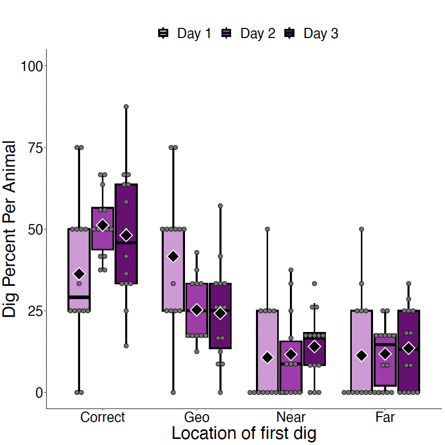

NeuralSpatial: Statistics for Distinct neural mechanisms for heading retrieval and context recognition in the hippocampus during spatial reorientation
Preliminars: Packages, functions, and data preload
Code
source(gzcon(url("https://github.com/ManuMi68/MuLaNa2/raw/main/SupportNeuroSpatial.R")))1 Results Section 1 Reorienting behavior in a two-context paradigm
1.1 Figure 1. Reorientation behavior in a two-context paradigm
Figure 1. Reorientation behavior in a two-context paradigm. A) Schematic of experimental chambers showing reward location (yellow star) in Context A (left) and Context B (right). B) Schematic of session structure of two-context paradigm. Animals (N = 14) are disoriented before being placed in each context, in alternating order on 12 consecutive trials. C) Percentage of digs in each cup location on test trials on day 1 (left), day 2 (center), and day 3 (right). D) Boxplots showing distribution of digs in geometrically correct vs. incorrect axes in each context. E) Boxplots showing distribution of digs in each cup location combining both contexts. In all boxplots graphs, the boxes indicate the upper and lower quartiles of the data and the whiskers (extending lines) the minimum and maximum outside the quartiles. The horizontal line indicates the median. Dots represent individual data points and asterisks (*) indicate p < 0.05. F) Cumulative proportion of Bayes Factor (BF) on days 1 to 3 per context evaluating the alternative model (MAlt) that animals preferentially dug on a distinct rewarded axis in each context vs. the null model (Mnull) that animals dug by chance. G) Cumulative proportion of individual Bayes Factors (BF) across days 1 to 3 combining contexts evaluating the alternative model (MAlt) that animals increased digging in C locations with experience vs. the null model (Mnull) that animals dug by chance Conventional values showing the border marking credibility for Malt (log(BF) > log(1/3)= 1.1) and Mnull (log(BF) < log(1/3)= -1.1) are indicated by vertical dashed lines. The value of half (0.5) of the sample is marked by a horizontal dashed line.
1.1.1 Fig 1C) Percentage of digs in each cup location on test trials across days

Code
if(!exists('FxDir')) source(gzcon(url("https://github.com/ManuMi68/MuLaNa2/raw/main/SupportNeuroSpatial.R")))
NmRoo = paste0(DirPath,"/", "Fig1C")
Mk.dir(NmRoo)
DT.BF <-copy(DigBehavioralDataForBF)
DT.Perc<-data.table(copy(DT.BF)) %>%
.[, data.table(table(Subj,Day,Dig)),by=Group] %>%
.[,Perc:=N/sum(N),by=list(Day,Group,Subj)] %>%
.[,.(MeanPer=percent(mean(Perc),0)), by=.(Group, Day, Dig)] %>%
as.data.table()
cat("Percents of Figure 1C:\n")
DT.PercPercents of Figure 1C:
Group Day Dig MeanPer
1: Context A Day 1 C 39%
2: Context A Day 2 C 48%
3: Context A Day 3 C 42%
4: Context A Day 1 G 39%
5: Context A Day 2 G 28%
6: Context A Day 3 G 28%
7: Context A Day 1 F 11%
8: Context A Day 2 F 12%
9: Context A Day 3 F 15%
10: Context A Day 1 W 11%
11: Context A Day 2 W 13%
12: Context A Day 3 W 15%
13: Context B Day 1 C 32%
14: Context B Day 2 C 55%
15: Context B Day 3 C 54%
16: Context B Day 1 G 43%
17: Context B Day 2 G 23%
18: Context B Day 3 G 20%
19: Context B Day 1 F 11%
20: Context B Day 2 F 11%
21: Context B Day 3 F 14%
22: Context B Day 1 W 14%
23: Context B Day 2 W 11%
24: Context B Day 3 W 12%
Group Day Dig MeanPer1.1.2 Fig 1D) Boxplots of digs in geometrically correct vs. incorrect axes in each context
{Design (2 Axis x S) x (3 Day x S) x (2 Context x S)}

Grp.1D code to generate this image)Code
if(!exists('FxDir')) source(gzcon(url("https://github.com/ManuMi68/MuLaNa2/raw/main/SupportNeuroSpatial.R")))
NmRoo = paste0(DirPath,"/", "Fig1D")
Mk.dir(NmRoo)
#DT1 <- readRDS(gzcon(url("https://github.com/ManuMi68/MuLaNa2/raw/main/NeuroSpatialData/BehavTwoContext.RDS")))
DTp<-copy(BehavTwoContext)
# "Fig.1D) has been preloaded to avoid overloading problems
# Box Plot
ColPer=c("#D599D7", "#AA33B0","#700075")
Grp.1D<- Grph.2023(
DatP = DTp,
Dvp="Proportion", VarX="Context",VarFill="Day",
LblsP =c("Cluster Quality", "","Dig Percent Per Animal",""),
ylmP =c(0,100),hLin = F,lvIp = 4,GrpSel = c(1:3),wMain=F,
TyGrp="Box", # Bar, Box, Violin, SplitViolin
Wthdot=T, Relleno=T, ResumAd=T,ColPer=ColPer
)
Grp.1D <- Grp.1D + facet_grid( ~ Axis)
ggsave(paste0(NmRoo,"/Fig1D.pdf"), Grp.1D, width=10, height=10)
# Descriptive
DTRes<-DTp[, rbindlist(lapply(.SD, stats_MM)), .SDcols = 'Proportion', by=.(Axis,Day,Context)]
#DTRes<-DTp[,c(N = .N,as.list(summary(Proportion))), by=.(Axis,Day,Context)]
write.csv2(DTRes,paste0(NmRoo, "/BehavTwoContext_Descriptive.csv"))
# AOV
a0 <- aov_ez("Subject", "Proportion", DTp,
within = c("Axis","Context","Day"))
# Effect size & Mixed
eef<-effectsize::eta_squared(a0, generalized=TRUE)
Mod.1r<-lmer(Proportion~Day * Axis * Context + (1|Subject),data=DTp)
# Pos Hoc of the more complex significant effect: Axis:Context
# Defines orthogonal contrasts from a prioristic perspective
custom <- list(`Unique` = c(1, -1))
PosH.4w = PosHocAut(a0, Mod.1r, "Axis|Context", c("Context","emmean"), custom=custom)
# Since the focal variable has only two levels, the Rom correction is not necessary
Grp<-"Run Grp.1D"
# Grp.1D
# Results
kableTabl(ezPrecis(DTp),"Design Structure", "")
cat("---------------------\n");
cat("Data Structure:\n");
str(DTp) # Data File
cat("---------------------\n");
print(DTp)
cat("---------------------\n");
kableTabl(DTRes,"Descriptive", "")
cat("Omnibus AOV:\n")
a0
cat("---------------------\n");
cat("Pos Hoc Simple Effects:\n")
PosH.4w$PosHocMM
#kableTabl(PosH.4w$PosHocMM,"Pos Hoc Simple Effects", "")
cat("---------------------\n");
kableTabl(PosH.4w$Means,"Descrptive & CI-95%", "")
cat("---------------------\n");
# cat("Graphics have been preloaded to avoid page overload\n (see the corresponding section for details).:\n");
cat("Exploratory Analysis:\n")
cat(Grp) # Exploratory Analysis
cat("\n")
Data frame dimensions: 168 rows, 5 columns| type | missing | values | min | max | |
|---|---|---|---|---|---|
| Subject | factor | 0 | 14 | 1 | 14 |
| Day | factor | 0 | 3 | Day 1 | Day 3 |
| Axis | factor | 0 | 2 | Long Wall Right | Long Wall Left |
| Context | factor | 0 | 2 | Context A | Context B |
| Proportion | numeric | 0 | 13 | 0 | 100 |
| Note: | |||||
---------------------
Data Structure:
Classes 'data.table' and 'data.frame': 168 obs. of 5 variables:
$ Subject : Factor w/ 14 levels "1","2","3","4",..: 1 1 1 1 1 1 1 1 1 1 ...
$ Day : Factor w/ 3 levels "Day 1","Day 2",..: 1 1 1 1 2 2 2 2 3 3 ...
$ Axis : Factor w/ 2 levels "Long Wall Right",..: 2 2 1 1 2 2 1 1 2 2 ...
$ Context : Factor w/ 2 levels "Context A","Context B": 1 2 1 2 1 2 1 2 1 2 ...
$ Proportion: num 0 100 100 0 33.3 ...
- attr(*, ".internal.selfref")=<externalptr>
- attr(*, "sorted")= chr [1:4] "Subject" "Day" "Axis" "Context"
---------------------
Subject Day Axis Context Proportion
1: 1 Day 1 Long Wall Left Context A 0.00000
2: 1 Day 1 Long Wall Left Context B 100.00000
3: 1 Day 1 Long Wall Right Context A 100.00000
4: 1 Day 1 Long Wall Right Context B 0.00000
5: 1 Day 2 Long Wall Left Context A 33.33333
---
164: 14 Day 2 Long Wall Right Context B 16.66667
165: 14 Day 3 Long Wall Left Context A 0.00000
166: 14 Day 3 Long Wall Left Context B 83.33333
167: 14 Day 3 Long Wall Right Context A 100.00000
168: 14 Day 3 Long Wall Right Context B 16.66667
---------------------| Axis | Day | Context | n | NAs | Min | 1st Qu | Median | Mean | Trimmed(20%) | 3rd Qu | Max | SD | SEM | IQR | MAD |
|---|---|---|---|---|---|---|---|---|---|---|---|---|---|---|---|
| Long Wall Left | Day 1 | Context A | 14 | 0 | 0.00 | 0.00 | 0.00 | 21.43 | 20.00 | 50.00 | 50.00 | 25.68 | 6.86 | 50.00 | 0.00 |
| Long Wall Left | Day 1 | Context B | 14 | 0 | 0.00 | 50.00 | 100.00 | 75.00 | 85.00 | 100.00 | 100.00 | 37.98 | 10.15 | 50.00 | 0.00 |
| Long Wall Right | Day 1 | Context A | 14 | 0 | 50.00 | 50.00 | 100.00 | 78.57 | 80.00 | 100.00 | 100.00 | 25.68 | 6.86 | 50.00 | 0.00 |
| Long Wall Right | Day 1 | Context B | 14 | 0 | 0.00 | 0.00 | 0.00 | 25.00 | 15.00 | 50.00 | 100.00 | 37.98 | 10.15 | 50.00 | 0.00 |
| Long Wall Left | Day 2 | Context A | 14 | 0 | 0.00 | 4.17 | 22.50 | 24.64 | 24.50 | 45.83 | 50.00 | 20.19 | 5.40 | 41.67 | 33.36 |
| Long Wall Left | Day 2 | Context B | 14 | 0 | 50.00 | 68.75 | 77.50 | 77.74 | 77.17 | 83.33 | 100.00 | 13.25 | 3.54 | 14.58 | 8.65 |
| Long Wall Right | Day 2 | Context A | 14 | 0 | 50.00 | 54.17 | 77.50 | 75.36 | 75.50 | 95.83 | 100.00 | 20.19 | 5.40 | 41.67 | 33.36 |
| Long Wall Right | Day 2 | Context B | 14 | 0 | 0.00 | 16.67 | 22.50 | 22.26 | 22.83 | 31.25 | 50.00 | 13.25 | 3.54 | 14.58 | 8.65 |
| Long Wall Left | Day 3 | Context A | 14 | 0 | 0.00 | 16.67 | 25.00 | 28.10 | 26.67 | 45.83 | 66.67 | 22.25 | 5.95 | 29.17 | 24.71 |
| Long Wall Left | Day 3 | Context B | 14 | 0 | 33.33 | 61.67 | 83.33 | 74.05 | 77.00 | 83.33 | 100.00 | 21.96 | 5.87 | 21.67 | 24.71 |
| Long Wall Right | Day 3 | Context A | 14 | 0 | 33.33 | 54.17 | 75.00 | 71.90 | 73.33 | 83.33 | 100.00 | 22.25 | 5.95 | 29.17 | 24.71 |
| Long Wall Right | Day 3 | Context B | 14 | 0 | 0.00 | 16.67 | 16.67 | 25.95 | 23.00 | 38.33 | 66.67 | 21.96 | 5.87 | 21.67 | 24.71 |
| Note: | |||||||||||||||
Omnibus AOV:
Anova Table (Type 3 tests)
Response: Proportion
Effect df MSE F ges p.value
1 Axis 1, 13 590.98 0.01 <.001 .934
2 Context 1, 13 -0.00 -0.00 <.001 >.999
3 Day 2, 26 0.00 0.00 <.001 >.999
4 Axis:Context 1, 13 1125.89 96.55 *** .533 <.001
5 Axis:Day 1.51, 19.65 2036.31 0.10 .003 .849
6 Context:Day 2, 26 -0.00 -0.00 <.001 >.999
7 Axis:Context:Day 1.52, 19.70 1669.71 0.20 .005 .758
---
Signif. codes: 0 '***' 0.001 '**' 0.01 '*' 0.05 '+' 0.1 ' ' 1
Sphericity correction method: GG
---------------------
Pos Hoc Simple Effects:
contrast Context estimate SE df t.ratio
1: Long.Wall.Right - Long.Wall.Left Context.A 50.56 7.0857 13 7.13
2: Long.Wall.Right - Long.Wall.Left Context.B -51.19 5.6168 13 -9.11
pHolm pRom
1: <.0001 *** NA
2: <.0001 *** NA
---------------------| Axis | Context | emmean | SE | df | lower.CL | upper.CL |
|---|---|---|---|---|---|---|
| Long.Wall.Left | Context.A | 24.72 | 3.5428 | 13 | 17.07 | 32.38 |
| Long.Wall.Right | Context.A | 75.28 | 3.5428 | 13 | 67.62 | 82.93 |
| Long.Wall.Right | Context.B | 24.40 | 2.8084 | 13 | 18.34 | 30.47 |
| Long.Wall.Left | Context.B | 75.60 | 2.8084 | 13 | 69.53 | 81.66 |
| Note: | ||||||
---------------------
Exploratory Analysis:
Run Grp.1D1.1.3 Fig 1E) Boxplots of digs in each cup location combining both contexts
{Design (4 Dig x S) x (3 Day x S)}

Grp.1E code to generate this image)Code
if(!exists('FxDir')) source(gzcon(url("https://github.com/ManuMi68/MuLaNa2/raw/main/SupportNeuroSpatial.R")))
NmRoo = paste0(DirPath,"/", "Fig1E")
Mk.dir(NmRoo)
#DT2 <- readRDS(gzcon(url("https://github.com/ManuMi68/MuLaNa2/raw/main/NeuroSpatialData/DigBehavioralData.RDS")))
DTp<-copy(DigBehavioralData)
# Fig.1E) Box Plot
ColPer=c("#D599D7", "#AA33B0","#700075")
Grp.1E<- Grph.2023(
DatP = DTp,
Dvp="Perc", VarX="Dig", VarFill="Day",
LblsP =c("Cluster Quality", "","Dig Percent Per Animal","Location of first dig"),
ylmP =c(0,100),hLin = F,lvIp = 4,GrpSel = c(1:3),wMain=F,
TyGrp="Box", # Bar, Box, Violin, SplitViolin
Wthdot=T, Relleno=T, ResumAd=T,ColPer=ColPer
)
ggsave(paste0(NmRoo,"/Fig1E.pdf"), Grp.1E, width=10, height=10)
# Descriptive
DTRes<-DTp[, rbindlist(lapply(.SD, stats_MM)), .SDcols = 'Perc', by=.(Dig,Day)]
#DTRes<-DTp[,c(N = .N,as.list(summary(Perc))), by=.(Dig,Day)]
write.csv2(DTRes,paste0(NmRoo, "/DigBehavioralData_Descriptive.csv"))
# AOV
a0 <- aov_ez("Subject", "Perc", DTp,
within = c("Dig","Day"))
# Effect size & Mixed
eef<-effectsize::eta_squared(a0, generalized=TRUE)
Mod.1r<-lmer(Perc~Day * Dig + (1|Subject),data=DTp)
# Pos Hoc
# Defines orthogonal contrasts from a prioristic perspective
custom <- list(`CG vs NF` = c(1, 1,-1,-1),
`C vs G` = c(1,-1, 0, 0),
`N vs F` = c(0, 0, 1,-1)
)
PosH.4w = PosHocAut(a0, Mod.1r, "Dig|Day", c("Day","emmean"), custom=custom)
Grp<-"Run Grp.1E code"
# Grp.1E
# Results
kableTabl(ezPrecis(DTp),"Design Structure", "")
cat("---------------------\n");
cat("Data Structure:\n");
str(DTp) # Data File
cat("---------------------\n");
print(DTp)
cat("---------------------\n");
kableTabl(DTRes,"Descriptive", "")
cat("Omnibus AOV:\n")
a0
cat("---------------------\n");
cat("Pos Hoc Simple Effects:\n")
PosH.4w$PosHocMM
#kableTabl(PosH.4w$PosHocMM,"Pos Hoc Simple Effects", "")
cat("---------------------\n");
kableTabl(PosH.4w$Means,"Descrptive & CI-95%", "")
cat("---------------------\n");
# cat("Graphics have been preloaded to avoid page overload\n (see the corresponding section for details).:\n");
cat("Exploratory Analysis:\n")
cat(Grp) # Exploratory Analysis
cat("\n")
Data frame dimensions: 168 rows, 5 columns| type | missing | values | min | max | |
|---|---|---|---|---|---|
| Day | factor | 0 | 3 | Day 1 | Day 3 |
| Subject | factor | 0 | 14 | AK42 | MG1 |
| Dig | factor | 0 | 4 | Correct | Far |
| N | numeric | 0 | 9 | 0 | 8 |
| Perc | numeric | 0 | 23 | 0 | 87.5 |
| Note: | |||||
---------------------
Data Structure:
Classes 'data.table' and 'data.frame': 168 obs. of 5 variables:
$ Day : Factor w/ 3 levels "Day 1","Day 2",..: 1 1 1 1 2 2 2 2 3 3 ...
$ Subject: Factor w/ 14 levels "AK42","AK74",..: 1 1 1 1 1 1 1 1 1 1 ...
$ Dig : Factor w/ 4 levels "Correct","Geo",..: 1 2 3 4 1 2 3 4 1 2 ...
$ N : int 2 2 0 0 5 2 3 2 3 5 ...
$ Perc : num 50 50 0 0 41.7 ...
- attr(*, ".internal.selfref")=<externalptr>
- attr(*, "sorted")= chr [1:3] "Subject" "Day" "Dig"
---------------------
Day Subject Dig N Perc
1: Day 1 AK42 Correct 2 50.000000
2: Day 1 AK42 Geo 2 50.000000
3: Day 1 AK42 Near 0 0.000000
4: Day 1 AK42 Far 0 0.000000
5: Day 2 AK42 Correct 5 41.666667
---
164: Day 2 MG1 Far 1 8.333333
165: Day 3 MG1 Correct 7 58.333333
166: Day 3 MG1 Geo 4 33.333333
167: Day 3 MG1 Near 1 8.333333
168: Day 3 MG1 Far 0 0.000000
---------------------| Dig | Day | n | NAs | Min | 1st Qu | Median | Mean | Trimmed(20%) | 3rd Qu | Max | SD | SEM | IQR | MAD |
|---|---|---|---|---|---|---|---|---|---|---|---|---|---|---|
| Correct | Day 1 | 14 | 0 | 0.00 | 25.00 | 29.17 | 36.31 | 35.83 | 50.00 | 75.00 | 23.25 | 6.21 | 25.00 | 30.89 |
| Geo | Day 1 | 14 | 0 | 0.00 | 25.00 | 50.00 | 41.67 | 40.83 | 50.00 | 75.00 | 20.67 | 5.52 | 25.00 | 30.89 |
| Near | Day 1 | 14 | 0 | 0.00 | 0.00 | 0.00 | 10.71 | 7.50 | 25.00 | 50.00 | 16.16 | 4.32 | 25.00 | 0.00 |
| Far | Day 1 | 14 | 0 | 0.00 | 0.00 | 0.00 | 11.31 | 7.50 | 25.00 | 50.00 | 16.86 | 4.51 | 25.00 | 0.00 |
| Correct | Day 2 | 14 | 0 | 37.50 | 43.75 | 50.00 | 51.21 | 50.87 | 56.49 | 66.67 | 9.78 | 2.61 | 12.74 | 11.47 |
| Geo | Day 2 | 14 | 0 | 12.50 | 17.05 | 25.00 | 25.30 | 24.47 | 33.33 | 42.86 | 9.36 | 2.50 | 16.29 | 12.35 |
| Near | Day 2 | 14 | 0 | 0.00 | 0.00 | 8.71 | 11.66 | 9.24 | 15.62 | 37.50 | 12.56 | 3.36 | 15.62 | 12.92 |
| Far | Day 2 | 14 | 0 | 0.00 | 2.08 | 14.58 | 11.82 | 11.55 | 17.80 | 25.00 | 9.13 | 2.44 | 15.72 | 9.27 |
| Correct | Day 3 | 14 | 0 | 14.29 | 33.33 | 45.83 | 48.13 | 48.03 | 63.64 | 87.50 | 20.27 | 5.42 | 30.30 | 22.46 |
| Geo | Day 3 | 14 | 0 | 0.00 | 13.54 | 25.00 | 24.24 | 23.22 | 33.33 | 57.14 | 15.11 | 4.04 | 19.79 | 12.36 |
| Near | Day 3 | 14 | 0 | 0.00 | 8.33 | 16.67 | 14.07 | 13.64 | 18.18 | 33.33 | 10.42 | 2.78 | 9.85 | 12.35 |
| Far | Day 3 | 14 | 0 | 0.00 | 0.00 | 13.26 | 13.57 | 12.80 | 25.00 | 33.33 | 12.48 | 3.34 | 25.00 | 18.53 |
| Note: | ||||||||||||||
Omnibus AOV:
Anova Table (Type 3 tests)
Response: Perc
Effect df MSE F ges p.value
1 Dig 2.18, 28.36 503.37 29.30 *** .466 <.001
2 Day 2, 26 0.00 0.00 <.001 >.999
3 Dig:Day 4.35, 56.53 400.92 2.60 * .109 .042
---
Signif. codes: 0 '***' 0.001 '**' 0.01 '*' 0.05 '+' 0.1 ' ' 1
Sphericity correction method: GG
---------------------
Pos Hoc Simple Effects:
contrast Day estimate SE df t.ratio pHolm pRom
1: Correct - Geo Day.1 -5.36 10.2102 13 -0.52 >.999 >.999
2: Correct - Near Day.1 25.60 8.3088 13 3.08 .0351 * .0345 *
3: Correct - Far Day.1 25.00 9.4491 13 2.65 .0605 . .0598 .
4: Geo - Near Day.1 30.95 8.3529 13 3.71 .0132 * .0130 *
5: Geo - Far Day.1 30.36 7.4948 13 4.05 .0083 ** .0081 **
6: Near - Far Day.1 -0.60 6.6221 13 -0.09 >.999 >.999
7: Correct - Geo Day.2 25.91 3.5414 13 7.32 <.0001 *** <.0001 ***
8: Correct - Near Day.2 39.55 5.5234 13 7.16 <.0001 *** <.0001 ***
9: Correct - Far Day.2 39.39 3.8211 13 10.31 <.0001 *** <.0001 ***
10: Geo - Near Day.2 13.64 4.9084 13 2.78 .0313 * .0313 *
11: Geo - Far Day.2 13.48 4.3274 13 3.11 .0246 * .0243 *
12: Near - Far Day.2 -0.16 4.5579 13 -0.04 .9721 .9721
13: Correct - Geo Day.3 23.89 8.7742 13 2.72 .0697 . .0686 .
14: Correct - Near Day.3 34.06 6.4763 13 5.26 .0009 *** .0009 ***
15: Correct - Far Day.3 34.56 7.9405 13 4.35 .0039 ** .0038 **
16: Geo - Near Day.3 10.17 5.4949 13 1.85 .1741 .1741
17: Geo - Far Day.3 10.67 4.7522 13 2.25 .1282 .1267
18: Near - Far Day.3 0.50 4.8408 13 0.10 .9189 .9189
---------------------| Dig | Day | emmean | SE | df | lower.CL | upper.CL |
|---|---|---|---|---|---|---|
| Near | Day.1 | 10.71 | 4.3176 | 13 | 1.39 | 20.04 |
| Far | Day.1 | 11.31 | 4.5061 | 13 | 1.57 | 21.04 |
| Correct | Day.1 | 36.31 | 6.2145 | 13 | 22.88 | 49.74 |
| Geo | Day.1 | 41.67 | 5.5249 | 13 | 29.73 | 53.60 |
| Near | Day.2 | 11.66 | 3.3565 | 13 | 4.41 | 18.91 |
| Far | Day.2 | 11.82 | 2.4388 | 13 | 6.55 | 17.09 |
| Geo | Day.2 | 25.30 | 2.5025 | 13 | 19.90 | 30.71 |
| Correct | Day.2 | 51.21 | 2.6144 | 13 | 45.57 | 56.86 |
| Far | Day.3 | 13.57 | 3.3362 | 13 | 6.36 | 20.77 |
| Near | Day.3 | 14.07 | 2.7849 | 13 | 8.05 | 20.09 |
| Geo | Day.3 | 24.24 | 4.0378 | 13 | 15.52 | 32.96 |
| Correct | Day.3 | 48.13 | 5.4183 | 13 | 36.42 | 59.83 |
| Note: | ||||||
---------------------
Exploratory Analysis:
Run Grp.1E code1.1.4 Fig 1F) Cumulative proportion of Bayes Factor (BF) on days 1 to 3 per context

Res.50$GrpDay$All code to generate this image)Code
if(!exists('FxDir')) source(gzcon(url("https://github.com/ManuMi68/MuLaNa2/raw/main/SupportNeuroSpatial.R")))
NmRoo = paste0(DirPath,"/", "Fig1F")
Mk.dir(NmRoo)
ValsBF2=seq(-2, 2, by=1.0)
logEs10=F
if (logEs10) ValsBF=sort(c(seq(-2,2,by=.5),-log10(3),log10(3),-.01))
if (!logEs10) ValsBF=sort(c(seq(-2,2,by=.5),-log(3),log(3),-.01))
# unique(DT.BF$Subj) AK42 AK74 JJ9 HG1 K1 MG1 CMG159 CMG089 CMG129 CMG154 CMG162 CMG161 CMG169 CMG087
Nsj=14; LgSess=12
nFi=Nsj*LgSess*2+Nsj*4 # Check Files: 392
#DT.BF <- readRDS(gzcon(url("https://github.com/ManuMi68/MuLaNa2/raw/main/NeuroSpatialData/DigBehavioralDataForBF.RDS")))
DT.BF <-copy(DigBehavioralDataForBF)
# Process the data to test:
# the alternative model (MAlt) that animals preferentially dug on the rewarded axis
# in each context (long wall right in Context A and long wall left in Context B) vs.
# the null model (Mnull) that animals dug by chance (50%).
# Note especially line: .[,BF:=BayNormRam(z,N,li=.5,ls=.9,Nulo=.5),by=list(Group,Day,Subj)]
DT.50<-data.table(copy(DT.BF)) %>%
.[,AxisMM :=Dig] %>% .[,HitsMM :=Dig] %>%
mutate(AxisMM = dplyr::recode(AxisMM, C = "C/G",F = "N/W", G = "C/G", W="N/W")) %>%
mutate(HitsMM = dplyr::recode(HitsMM, C = "1", F = "0", G = "1", W="0")) %>%
mutate(HitsMM = as.numeric(as.character(HitsMM))) %>%
data.table() %>%
.[, data.table(table(Subj,Day,AxisMM)),by=Group] %>%
.[,Perc:=N/sum(N),by=list(Group,Subj,Day)] %>%
.[,zz:=sum(N),by=list(Group,Subj,Day)] %>%
.[AxisMM=="C/G"] %>%
.[,Inter:=interaction(Group,Day)] %>%
dplyr::rename(., z=N) %>%
dplyr::rename(., N=zz) %>%
.[,BF:=BayNormRam(z,N,li=.5,ls=.9,Nulo=.5),by=list(Group,Day,Subj)] %>%
.[,InterBF:=InterpBF(BF),by=list(Group,Day,Subj)] %>%
IfFilterLog(.,Fs = logEs10) %>%
.[, ecdfr := lapply(.SD, function(z) stats::ecdf(z)(z)), .SDcols = "logBF", by = .(Group,Day) ] %>%
mutate(Day=factor(Day)) %>%
dplyr::rename(., Subject=Subj) %>%
as.data.table()
# Overall results and Fig. 1F
Res.50 = MakeBF(DT.50, paste0(NmRoo, "/50Chan"))
cat("BF Overall results of Fig. 1F:\n")
Res.50$Global
cat("Run Res.50$GrpDay$All code for Fig. 1F :\n")
# To View Fig.1F:
# Res.50$GrpDay$AllBF Overall results of Fig. 1F:
Group Day BF InterBF logBF
1: Context A Day 1 63.9838 Very strong/Strong 4.1586
2: Context A Day 2 1380.0707 Extreme/Very strong 7.2299
3: Context A Day 3 1036.3003 Extreme/Very strong 6.9434
4: Context B Day 1 65.6244 Very strong/Strong 4.1839
5: Context B Day 2 5444.6652 Extreme/Very strong 8.6024
6: Context B Day 3 5226.0428 Extreme/Very strong 8.5614
Run Res.50$GrpDay$All code for Fig. 1F :


1.1.5 Table S1) Complement of Figure 1. Individual data points corresponding to Figure 1C showing percent of digs in each cup per context
Code
# To obtain the percentages data
DTPerc<- data.table(copy(DT.BF)) %>%
.[, data.table(table(Subj,Day,Dig)),by=Group] %>%
.[,Perc:=percent(N/sum(N)),by=list(Group,Subj,Day)] %>%
mutate(N=NULL) %>%
data.table()
# To obtain the percentages data in wide format
DTFPivot<-DTPerc %>%
pivot_wider(names_from = c(Dig, Group), values_from = Perc, names_vary = "slowest")
kableTabl(DTFPivot,"percent of digs in each cup per context", "Table S1. Complement of Figure 1")
write.csv2(DTFPivot,paste0(NmRoo,"/DigPercents.csv"))| Subj | Day | C_Context A | G_Context A | F_Context A | W_Context A | C_Context B | G_Context B | F_Context B | W_Context B |
|---|---|---|---|---|---|---|---|---|---|
| AK42 | Day 1 | 0.00% | 100.00% | 0.00% | 0.00% | 100.00% | 0.00% | 0.00% | 0.00% |
| AK74 | Day 1 | 0.00% | 50.00% | 0.00% | 50.00% | 0.00% | 100.00% | 0.00% | 0.00% |
| CMG087 | Day 1 | 50.00% | 50.00% | 0.00% | 0.00% | 50.00% | 50.00% | 0.00% | 0.00% |
| CMG089 | Day 1 | 50.00% | 0.00% | 0.00% | 50.00% | 0.00% | 100.00% | 0.00% | 0.00% |
| CMG129 | Day 1 | 50.00% | 50.00% | 0.00% | 0.00% | 0.00% | 100.00% | 0.00% | 0.00% |
| CMG154 | Day 1 | 50.00% | 50.00% | 0.00% | 0.00% | 0.00% | 0.00% | 0.00% | 100.00% |
| CMG159 | Day 1 | 0.00% | 50.00% | 50.00% | 0.00% | 50.00% | 50.00% | 0.00% | 0.00% |
| CMG161 | Day 1 | 50.00% | 50.00% | 0.00% | 0.00% | 50.00% | 0.00% | 50.00% | 0.00% |
| CMG162 | Day 1 | 50.00% | 0.00% | 0.00% | 50.00% | 0.00% | 50.00% | 0.00% | 50.00% |
| CMG169 | Day 1 | 50.00% | 0.00% | 50.00% | 0.00% | 100.00% | 0.00% | 0.00% | 0.00% |
| HG1 | Day 1 | 100.00% | 0.00% | 0.00% | 0.00% | 50.00% | 50.00% | 0.00% | 0.00% |
| JJ9 | Day 1 | 0.00% | 50.00% | 50.00% | 0.00% | 0.00% | 0.00% | 50.00% | 50.00% |
| K1 | Day 1 | 50.00% | 50.00% | 0.00% | 0.00% | 0.00% | 50.00% | 50.00% | 0.00% |
| MG1 | Day 1 | 50.00% | 50.00% | 0.00% | 0.00% | 50.00% | 50.00% | 0.00% | 0.00% |
| AK42 | Day 2 | 50.00% | 16.67% | 33.33% | 0.00% | 33.33% | 16.67% | 16.67% | 33.33% |
| AK74 | Day 2 | 33.33% | 16.67% | 16.67% | 33.33% | 66.67% | 16.67% | 0.00% | 16.67% |
| CMG087 | Day 2 | 50.00% | 25.00% | 0.00% | 25.00% | 25.00% | 50.00% | 25.00% | 0.00% |
| CMG089 | Day 2 | 66.67% | 16.67% | 0.00% | 16.67% | 60.00% | 20.00% | 0.00% | 20.00% |
| CMG129 | Day 2 | 50.00% | 0.00% | 0.00% | 50.00% | 50.00% | 25.00% | 25.00% | 0.00% |
| CMG154 | Day 2 | 66.67% | 33.33% | 0.00% | 0.00% | 50.00% | 50.00% | 0.00% | 0.00% |
| CMG159 | Day 2 | 60.00% | 20.00% | 0.00% | 20.00% | 50.00% | 16.67% | 16.67% | 16.67% |
| CMG161 | Day 2 | 25.00% | 25.00% | 50.00% | 0.00% | 50.00% | 25.00% | 25.00% | 0.00% |
| CMG162 | Day 2 | 33.33% | 33.33% | 16.67% | 16.67% | 50.00% | 16.67% | 16.67% | 16.67% |
| CMG169 | Day 2 | 66.67% | 33.33% | 0.00% | 0.00% | 66.67% | 33.33% | 0.00% | 0.00% |
| HG1 | Day 2 | 33.33% | 66.67% | 0.00% | 0.00% | 66.67% | 0.00% | 0.00% | 33.33% |
| JJ9 | Day 2 | 33.33% | 16.67% | 50.00% | 0.00% | 66.67% | 16.67% | 16.67% | 0.00% |
| K1 | Day 2 | 33.33% | 50.00% | 0.00% | 16.67% | 66.67% | 16.67% | 16.67% | 0.00% |
| MG1 | Day 2 | 66.67% | 33.33% | 0.00% | 0.00% | 66.67% | 16.67% | 0.00% | 16.67% |
| AK42 | Day 3 | 33.33% | 33.33% | 16.67% | 16.67% | 16.67% | 50.00% | 0.00% | 33.33% |
| AK74 | Day 3 | 50.00% | 50.00% | 0.00% | 0.00% | 16.67% | 16.67% | 66.67% | 0.00% |
| CMG087 | Day 3 | 33.33% | 16.67% | 50.00% | 0.00% | 33.33% | 50.00% | 0.00% | 16.67% |
| CMG089 | Day 3 | 20.00% | 40.00% | 20.00% | 20.00% | 50.00% | 16.67% | 16.67% | 16.67% |
| CMG129 | Day 3 | 33.33% | 33.33% | 16.67% | 16.67% | 33.33% | 0.00% | 16.67% | 50.00% |
| CMG154 | Day 3 | 0.00% | 50.00% | 0.00% | 50.00% | 33.33% | 66.67% | 0.00% | 0.00% |
| CMG159 | Day 3 | 50.00% | 16.67% | 16.67% | 16.67% | 33.33% | 33.33% | 0.00% | 33.33% |
| CMG161 | Day 3 | 16.67% | 16.67% | 16.67% | 50.00% | 83.33% | 0.00% | 16.67% | 0.00% |
| CMG162 | Day 3 | 83.33% | 0.00% | 16.67% | 0.00% | 50.00% | 33.33% | 16.67% | 0.00% |
| CMG169 | Day 3 | 40.00% | 0.00% | 40.00% | 20.00% | 83.33% | 0.00% | 0.00% | 16.67% |
| HG1 | Day 3 | 75.00% | 25.00% | 0.00% | 0.00% | 100.00% | 0.00% | 0.00% | 0.00% |
| JJ9 | Day 3 | 33.33% | 50.00% | 0.00% | 16.67% | 100.00% | 0.00% | 0.00% | 0.00% |
| K1 | Day 3 | 66.67% | 16.67% | 16.67% | 0.00% | 60.00% | 0.00% | 40.00% | 0.00% |
| MG1 | Day 3 | 50.00% | 50.00% | 0.00% | 0.00% | 66.67% | 16.67% | 16.67% | 0.00% |
| Note: | |||||||||
| Table S1. Complement of Figure 1 |
1.1.6 Table S2) Individual Data of Fig.1F)
Code
DT.50[, .(Group,Day,Subject, logBF) ] Group Day Subject logBF
1: Context A Day 1 AK42 0.69979172
2: Context A Day 1 AK74 -0.23995067
3: Context A Day 1 CMG087 0.69979172
4: Context A Day 1 CMG089 -0.23995067
5: Context A Day 1 CMG129 0.69979172
6: Context A Day 1 CMG154 0.69979172
7: Context A Day 1 CMG159 -0.23995067
8: Context A Day 1 CMG161 0.69979172
9: Context A Day 1 CMG162 -0.23995067
10: Context A Day 1 CMG169 -0.23995067
11: Context A Day 1 HG1 0.69979172
12: Context A Day 1 JJ9 -0.23995067
13: Context A Day 1 K1 0.69979172
14: Context A Day 1 MG1 0.69979172
15: Context A Day 2 AK42 0.13052153
16: Context A Day 2 AK74 -0.56508673
17: Context A Day 2 CMG087 0.37986008
18: Context A Day 2 CMG089 1.09900028
19: Context A Day 2 CMG129 -0.42273335
20: Context A Day 2 CMG154 1.08788833
21: Context A Day 2 CMG159 0.72769030
22: Context A Day 2 CMG161 -0.42273335
23: Context A Day 2 CMG162 0.13052153
24: Context A Day 2 CMG169 1.08788833
25: Context A Day 2 HG1 1.08788833
26: Context A Day 2 JJ9 -0.56508673
27: Context A Day 2 K1 1.09900028
28: Context A Day 2 MG1 2.37527119
29: Context A Day 3 AK42 0.13052153
30: Context A Day 3 AK74 2.37527119
31: Context A Day 3 CMG087 -0.56508673
32: Context A Day 3 CMG089 -0.15798023
33: Context A Day 3 CMG129 0.13052153
34: Context A Day 3 CMG154 -0.42273335
35: Context A Day 3 CMG159 0.13052153
36: Context A Day 3 CMG161 -1.06430031
37: Context A Day 3 CMG162 1.09900028
38: Context A Day 3 CMG169 -0.78385994
39: Context A Day 3 HG1 1.49826498
40: Context A Day 3 JJ9 1.09900028
41: Context A Day 3 K1 1.09900028
42: Context A Day 3 MG1 2.37527119
43: Context B Day 1 AK42 0.69979172
44: Context B Day 1 AK74 0.69979172
45: Context B Day 1 CMG087 0.69979172
46: Context B Day 1 CMG089 0.69979172
47: Context B Day 1 CMG129 0.69979172
48: Context B Day 1 CMG154 -0.51082562
49: Context B Day 1 CMG159 0.69979172
50: Context B Day 1 CMG161 -0.23995067
51: Context B Day 1 CMG162 -0.23995067
52: Context B Day 1 CMG169 0.69979172
53: Context B Day 1 HG1 0.69979172
54: Context B Day 1 JJ9 -0.88350091
55: Context B Day 1 K1 -0.23995067
56: Context B Day 1 MG1 0.69979172
57: Context B Day 2 AK42 -0.56508673
58: Context B Day 2 AK74 1.09900028
59: Context B Day 2 CMG087 0.37986008
60: Context B Day 2 CMG089 0.72769030
61: Context B Day 2 CMG129 0.37986008
62: Context B Day 2 CMG154 1.49826498
63: Context B Day 2 CMG159 0.13052153
64: Context B Day 2 CMG161 0.37986008
65: Context B Day 2 CMG162 0.13052153
66: Context B Day 2 CMG169 1.08788833
67: Context B Day 2 HG1 0.05701025
68: Context B Day 2 JJ9 1.09900028
69: Context B Day 2 K1 1.09900028
70: Context B Day 2 MG1 1.09900028
71: Context B Day 3 AK42 0.13052153
72: Context B Day 3 AK74 -1.06430031
73: Context B Day 3 CMG087 1.09900028
74: Context B Day 3 CMG089 0.13052153
75: Context B Day 3 CMG129 -1.06430031
76: Context B Day 3 CMG154 1.08788833
77: Context B Day 3 CMG159 0.13052153
78: Context B Day 3 CMG161 1.09900028
79: Context B Day 3 CMG162 1.09900028
80: Context B Day 3 CMG169 1.09900028
81: Context B Day 3 HG1 1.49826498
82: Context B Day 3 JJ9 2.37527119
83: Context B Day 3 K1 -0.15798023
84: Context B Day 3 MG1 1.09900028
Group Day Subject logBF1.1.7 Fig 1G) Cumulative proportion of individual Bayes Factors (BF) across days 1 to 3 combining contexts

Res.25.NoCx$GrpDay code to generate this image)Code
if(!exists('FxDir')) source(gzcon(url("https://github.com/ManuMi68/MuLaNa2/raw/main/SupportNeuroSpatial.R")))
NmRoo = paste0(DirPath,"/", "Fig1G")
Mk.dir(NmRoo)
ValsBF2=seq(-2, 2, by=1.0)
logEs10=F
if (logEs10) ValsBF=sort(c(seq(-2,2,by=.5),-log10(3),log10(3),-.01))
if (!logEs10) ValsBF=sort(c(seq(-2,2,by=.5),-log(3),log(3),-.01))
# unique(DT.BF$Subj) AK42 AK74 JJ9 HG1 K1 MG1 CMG159 CMG089 CMG129 CMG154 CMG162 CMG161 CMG169 CMG087
Nsj=14; LgSess=12
nFi=Nsj*LgSess*2+Nsj*4 # Check Files: 392
#DT.BF <- readRDS(gzcon(url("https://github.com/ManuMi68/MuLaNa2/raw/main/NeuroSpatialData/DigBehavioralDataForBF.RDS")))
DT.BF <-copy(DigBehavioralDataForBF)
# Process the data to test:
# the alternative model (MAlt) that animals dug in the rewarded cup location vs.
# the null model (Mnull) that animals dug by chance (25%).
# Note especially line: .[,BF:=BayNormRam(z,N,li=.25,ls=.9,Nulo=.25),by=list(Day,Subj)]
DT.25.NoCx<-data.table(copy(DT.BF)) %>%
.[,AxisMM :=Dig] %>% .[,HitsMM :=Dig] %>%
mutate(AxisMM = dplyr::recode(AxisMM, C = "C/G",F = "N/W", G = "N/W", W="N/W")) %>%
mutate(HitsMM = dplyr::recode(HitsMM, C = "1", F = "0", G = "0", W="0")) %>%
mutate(HitsMM = as.numeric(as.character(HitsMM))) %>%
data.table() %>%
.[, data.table(table(Subj,AxisMM)),by=Day] %>%
.[,Perc:=N/sum(N),by=list(Day,Subj)] %>%
.[,zz:=sum(N),by=list(Day, Subj)] %>%
.[AxisMM=="C/G"] %>%
.[,Inter:=Day] %>%
dplyr::rename(., z=N) %>%
dplyr::rename(., N=zz) %>%
.[,BF:=BayNormRam(z,N,li=.25,ls=.9,Nulo=.25),by=list(Day,Subj)] %>%
.[,InterBF:=InterpBF(BF),by=list(Day,Subj)] %>%
IfFilterLog2(.,Fs = logEs10) %>%
.[, ecdfr := lapply(.SD, function(z) stats::ecdf(z)(z)), .SDcols = "logBF", by = .(Day) ] %>%
mutate(Day=factor(Day)) %>%
dplyr::rename(., Subject=Subj) %>%
as.data.table()
# Overall results and Fig. 1G
Res.25.NoCx = MakeBFNoCx(DT.25.NoCx, paste0(NmRoo, "/25Chan_FolCx"))
cat("BF Overall results of Fig. 1G:\n")
Res.25.NoCx$Global
cat("Run Res.25.NoCx$GrpDay code for Fig. 1G:\n")
# To view Figure 1G:
# Res.25.NoCx$GrpDayBF Overall results of Fig. 1G:
Day BF InterBF logBF
1: Day 1 0.0736 Contray Strong/Positive -2.6096
2: Day 2 3465056.9690 Extreme/Very strong 15.0582
3: Day 3 47194756.6467 Extreme/Very strong 17.6698
Run Res.25.NoCx$GrpDay code for Fig. 1G:


1.1.8 Table S3) Individual Data of Fig.1G).
Code
DT.25.NoCx[, .(Day,Subject,logBF) ] Day Subject logBF
1: Day 1 AK42 0.25866970
2: Day 1 AK74 -1.46637921
3: Day 1 CMG087 0.25866970
4: Day 1 CMG089 -0.77391707
5: Day 1 CMG129 -0.77391707
6: Day 1 CMG154 -0.40091990
7: Day 1 CMG159 -0.77391707
8: Day 1 CMG161 0.25866970
9: Day 1 CMG162 -0.77391707
10: Day 1 CMG169 1.77948894
11: Day 1 HG1 1.77948894
12: Day 1 JJ9 -1.46637921
13: Day 1 K1 -0.77391707
14: Day 1 MG1 0.25866970
15: Day 2 AK42 0.05289697
16: Day 2 AK74 1.05628831
17: Day 2 CMG087 -0.37576995
18: Day 2 CMG089 2.99443617
19: Day 2 CMG129 0.62986686
20: Day 2 CMG154 1.17136075
21: Day 2 CMG159 1.55158337
22: Day 2 CMG161 -0.37576995
23: Day 2 CMG162 0.05289697
24: Day 2 CMG169 1.85803072
25: Day 2 HG1 0.43496098
26: Day 2 JJ9 1.05628831
27: Day 2 K1 1.05628831
28: Day 2 MG1 3.89488181
29: Day 3 AK42 -1.31719395
30: Day 3 AK74 -0.72281060
31: Day 3 CMG087 -0.72281060
32: Day 3 CMG089 -0.46582066
33: Day 3 CMG129 -0.72281060
34: Day 3 CMG154 -1.48435756
35: Day 3 CMG159 0.05289697
36: Day 3 CMG161 1.05628831
37: Day 3 CMG162 3.89488181
38: Day 3 CMG169 2.99443617
39: Day 3 HG1 5.89062408
40: Day 3 JJ9 3.89488181
41: Day 3 K1 2.99443617
42: Day 3 MG1 2.32715201
Day Subject logBF2 Results Section 2 Place field alignment to spatial geometry persists over days and predicts digging behavior
2.1 Figure 2. Place field alignment to spatial geometry persists over days.
Figure 2. Place field alignment to spatial geometry persists over days. A) Example place cell maps from two simultaneously recorded cells on day 3 from electrophysiology (left) and calciumimaging (right) recordings. B) Quantification of best match rotation (BMR) between trials for a cell. Place cells’ maps are compressed to squares (indicated by the dashed lines and arrow on top of each map) and compared across all trials to determine which rotation yields the highest correlation between each pair of maps. For each trial comparison, one of the maps is rotated 0°, 90°, 180°, and 270°. The highest pixel to pixel cross-correlation between the non-rotated trial A map and rotated trial B map determines the BMR for that trial comparison. C) Distribution of bestmatch rotations across days using electrophysiological (N = 7 on day 1 and 6 on days 2 and 3, left) and calcium-imaging (N = 5, right) recordings, computed as the proportion of pairwise trial comparisons for which each rotation yielded the best match, averaged per animal. D) Schematic of heading prediction method using the center-out measure (see methods). For each place field, the angles from the center of the arena to the center of mass of the field was measured. The center-out measure from Corr (C, teal) and Geo (G, red) trials were used to train a Support Vector Machine (SVM), leaving the trial to be predicted out (gray). E) Heading prediction accuracy using center-out measure. Histograms represent mean ± standard error of the mean (SEM), circles represent individual animal points. Red dashed line represents chance level (50%). Asterisks (*) indicate p < 0.05.
2.1.1 Fig.2C-left) Distribution of bestmatch rotations across days using electrophysiological recordings
{Design (3 Day x S) x (4 Rotaton x S)}

Code
if(!exists('FxDir')) source(gzcon(url("https://github.com/ManuMi68/MuLaNa2/raw/main/SupportNeuroSpatial.R")))
NmRoo = paste0(DirPath,"/", "Fig2CLeft ")
Mk.dir(NmRoo)
#DT3 <- readRDS(gzcon(url("https://github.com/ManuMi68/MuLaNa2/raw/main/NeuroSpatialData/Tetrodes.RDS")))
DTp<-copy(Tetrodes)
# "Fig.2CLeft) Box Plot
ColPer=c("#D599D7", "#AA33B0","#700075")
Grp.2CL<- Grph.2023(
DatP = DTp,
Dvp="Proportion", VarX="Rotation",VarFill="Day",
LblsP =c("Cluster Quality", "","Percent Trial Pairs","Best Match Rotation"),
ylmP =c(0,.6),hLin = F,lvIp = 4,GrpSel = c(1:3),wMain=F,
TyGrp="Box", # Bar, Box, Violin, SplitViolin
Wthdot=T, Relleno=T, ResumAd=T,ColPer=ColPer
)
ggsave(paste0(NmRoo,"/Fig2C_Left.pdf"), Grp.2CL, width=10, height=10)
# Descriptive
DTRes<-DTp[, rbindlist(lapply(.SD, stats_MM)), .SDcols = 'Proportion', by=.(Rotation,Day)]
#DTRes<-DTp[,c(N = .N,as.list(summary(Proportion))), by=.(Rotation,Day)]
write.csv2(DTRes,paste0(NmRoo, "/Tetrodes_Descriptive.csv"))
# AOV
a0 <- aov_ez("Subject", "Proportion", DTp,
within = c("Rotation","Day"))
# Effect size & Mixed
eef<-effectsize::eta_squared(a0, generalized=TRUE)
Mod.1r<-lmer(Proportion~Day * Rotation + (1|Subject),data=DTp)
# Pos Hoc
# Defines orthogonal contrasts from a prioristic perspective
custom <- list(`0.180vs90.270` = c(1,-1, 1,-1),
`0vs180` = c(1, 0,-1, 0),
`90vs270` = c(0, 1, 0,-1)
)
PosH.4w = PosHocAut(Mod.1r, Mod.1r, "Rotation", c("Rotation","emmean"), custom=custom)
Grp<-"Run Grp.2CL code"
# Grp.2CL
# Results
kableTabl(ezPrecis(DTp),"Design Structure", "")
cat("---------------------\n");
cat("Data Structure:\n");
str(DTp) # Data File
cat("---------------------\n");
print(DTp)
cat("---------------------\n");
kableTabl(DTRes,"Descriptive", "")
cat("Omnibus AOV:\n")
a0
cat("---------------------\n");
cat("Pos Hoc Simple Effects:\n")
PosH.4w$PosHocMM
#kableTabl(PosH.4w$PosHocMM,"Pos Hoc Simple Effects", "")
cat("---------------------\n");
kableTabl(PosH.4w$Means,"Descrptive & CI-95%", "")
cat("---------------------\n");
# cat("Graphics have been preloaded to avoid page overload\n (see the corresponding section for details).:\n");
cat("Exploratory Analysis:\n")
cat(Grp) # Exploratory Analysis
cat("\n")
Data frame dimensions: 72 rows, 4 columns| type | missing | values | min | max | |
|---|---|---|---|---|---|
| Subject | factor | 0 | 6 | AK42_CA1 | MG1 |
| Day | factor | 0 | 3 | Day 1 | Day 3 |
| Rotation | factor | 0 | 4 | 0º | 270º |
| Proportion | numeric | 0 | 71 | 0.06467662 | 0.579602 |
| Note: | |||||
---------------------
Data Structure:
Classes 'data.table' and 'data.frame': 72 obs. of 4 variables:
$ Subject : Factor w/ 6 levels "AK42_CA1","AK74_CA1",..: 1 1 1 1 2 2 2 2 3 3 ...
$ Day : Factor w/ 3 levels "Day 1","Day 2",..: 1 1 1 1 1 1 1 1 1 1 ...
$ Rotation : Factor w/ 4 levels "0º","90º","180º",..: 1 2 3 4 1 2 3 4 1 2 ...
$ Proportion: num 0.505 0.11 0.298 0.087 0.468 ...
- attr(*, ".internal.selfref")=<externalptr>
---------------------
Subject Day Rotation Proportion
1: AK42_CA1 Day 1 0º 0.50534351
2: AK42_CA1 Day 1 90º 0.10992366
3: AK42_CA1 Day 1 180º 0.29770992
4: AK42_CA1 Day 1 270º 0.08702290
5: AK74_CA1 Day 1 0º 0.46842105
6: AK74_CA1 Day 1 90º 0.16842105
7: AK74_CA1 Day 1 180º 0.18947368
8: AK74_CA1 Day 1 270º 0.17368421
9: CMG159_recut Day 1 0º 0.26382306
10: CMG159_recut Day 1 90º 0.19905213
11: CMG159_recut Day 1 180º 0.26856240
12: CMG159_recut Day 1 270º 0.26856240
13: JJ9_CA1 Day 1 0º 0.38341969
14: JJ9_CA1 Day 1 90º 0.15025907
15: JJ9_CA1 Day 1 180º 0.34715026
16: JJ9_CA1 Day 1 270º 0.11917098
17: MG1 Day 1 0º 0.25443038
18: MG1 Day 1 90º 0.23164557
19: MG1 Day 1 180º 0.26329114
20: MG1 Day 1 270º 0.25063291
21: K1_CA1 Day 1 0º 0.49624060
22: K1_CA1 Day 1 90º 0.09022556
23: K1_CA1 Day 1 180º 0.27067669
24: K1_CA1 Day 1 270º 0.14285714
25: AK42_CA1 Day 2 0º 0.57960199
26: AK42_CA1 Day 2 90º 0.06467662
27: AK42_CA1 Day 2 180º 0.23383085
28: AK42_CA1 Day 2 270º 0.12189055
29: AK74_CA1 Day 2 0º 0.49771689
30: AK74_CA1 Day 2 90º 0.14611872
31: AK74_CA1 Day 2 180º 0.14155251
32: AK74_CA1 Day 2 270º 0.21461187
33: CMG159_recut Day 2 0º 0.36533085
34: CMG159_recut Day 2 90º 0.23671948
35: CMG159_recut Day 2 180º 0.21714818
36: CMG159_recut Day 2 270º 0.18080149
37: JJ9_CA1 Day 2 0º 0.40116279
38: JJ9_CA1 Day 2 90º 0.18604651
39: JJ9_CA1 Day 2 180º 0.27325581
40: JJ9_CA1 Day 2 270º 0.13953488
41: MG1 Day 2 0º 0.29508197
42: MG1 Day 2 90º 0.23302108
43: MG1 Day 2 180º 0.25644028
44: MG1 Day 2 270º 0.21545667
45: K1_CA1 Day 2 0º 0.37202797
46: K1_CA1 Day 2 90º 0.19580420
47: K1_CA1 Day 2 180º 0.26013986
48: K1_CA1 Day 2 270º 0.17202797
49: AK42_CA1 Day 3 0º 0.26229508
50: AK42_CA1 Day 3 90º 0.21162444
51: AK42_CA1 Day 3 180º 0.30849478
52: AK42_CA1 Day 3 270º 0.21758569
53: AK74_CA1 Day 3 0º 0.36148649
54: AK74_CA1 Day 3 90º 0.13851351
55: AK74_CA1 Day 3 180º 0.37837838
56: AK74_CA1 Day 3 270º 0.12162162
57: CMG159_recut Day 3 0º 0.29688712
58: CMG159_recut Day 3 90º 0.21947323
59: CMG159_recut Day 3 180º 0.23862711
60: CMG159_recut Day 3 270º 0.24501212
61: JJ9_CA1 Day 3 0º 0.52749491
62: JJ9_CA1 Day 3 90º 0.11405295
63: JJ9_CA1 Day 3 180º 0.17311609
64: JJ9_CA1 Day 3 270º 0.18533605
65: MG1 Day 3 0º 0.32816537
66: MG1 Day 3 90º 0.23255814
67: MG1 Day 3 180º 0.24289406
68: MG1 Day 3 270º 0.19638243
69: K1_CA1 Day 3 0º 0.27972028
70: K1_CA1 Day 3 90º 0.24009324
71: K1_CA1 Day 3 180º 0.28671329
72: K1_CA1 Day 3 270º 0.19347319
Subject Day Rotation Proportion
---------------------| Rotation | Day | n | NAs | Min | 1st Qu | Median | Mean | Trimmed(20%) | 3rd Qu | Max | SD | SEM | IQR | MAD |
|---|---|---|---|---|---|---|---|---|---|---|---|---|---|---|
| 0º | Day 1 | 6 | 0 | 0.25 | 0.29 | 0.43 | 0.40 | 0.40 | 0.49 | 0.51 | 0.11 | 0.05 | 0.20 | 0.11 |
| 90º | Day 1 | 6 | 0 | 0.09 | 0.12 | 0.16 | 0.16 | 0.16 | 0.19 | 0.23 | 0.05 | 0.02 | 0.07 | 0.07 |
| 180º | Day 1 | 6 | 0 | 0.19 | 0.26 | 0.27 | 0.27 | 0.28 | 0.29 | 0.35 | 0.05 | 0.02 | 0.03 | 0.03 |
| 270º | Day 1 | 6 | 0 | 0.09 | 0.13 | 0.16 | 0.17 | 0.17 | 0.23 | 0.27 | 0.07 | 0.03 | 0.11 | 0.08 |
| 0º | Day 2 | 6 | 0 | 0.30 | 0.37 | 0.39 | 0.42 | 0.41 | 0.47 | 0.58 | 0.10 | 0.04 | 0.11 | 0.08 |
| 90º | Day 2 | 6 | 0 | 0.06 | 0.16 | 0.19 | 0.18 | 0.19 | 0.22 | 0.24 | 0.06 | 0.03 | 0.07 | 0.06 |
| 180º | Day 2 | 6 | 0 | 0.14 | 0.22 | 0.25 | 0.23 | 0.24 | 0.26 | 0.27 | 0.05 | 0.02 | 0.04 | 0.03 |
| 270º | Day 2 | 6 | 0 | 0.12 | 0.15 | 0.18 | 0.17 | 0.18 | 0.21 | 0.22 | 0.04 | 0.02 | 0.06 | 0.06 |
| 0º | Day 3 | 6 | 0 | 0.26 | 0.28 | 0.31 | 0.34 | 0.32 | 0.35 | 0.53 | 0.10 | 0.04 | 0.07 | 0.06 |
| 90º | Day 3 | 6 | 0 | 0.11 | 0.16 | 0.22 | 0.19 | 0.20 | 0.23 | 0.24 | 0.05 | 0.02 | 0.07 | 0.03 |
| 180º | Day 3 | 6 | 0 | 0.17 | 0.24 | 0.26 | 0.27 | 0.27 | 0.30 | 0.38 | 0.07 | 0.03 | 0.06 | 0.05 |
| 270º | Day 3 | 6 | 0 | 0.12 | 0.19 | 0.19 | 0.19 | 0.20 | 0.21 | 0.25 | 0.04 | 0.02 | 0.02 | 0.02 |
| Note: | ||||||||||||||
Omnibus AOV:
Anova Table (Type 3 tests)
Response: Proportion
Effect df MSE F ges p.value
1 Rotation 1.10, 5.50 0.02 20.78 ** .629 .004
2 Day 2, 10 0.00 1.00 <.001 .402
3 Rotation:Day 6, 30 0.01 0.83 .090 .553
---
Signif. codes: 0 '***' 0.001 '**' 0.01 '*' 0.05 '+' 0.1 ' ' 1
Sphericity correction method: GG
---------------------
Pos Hoc Simple Effects:
contrast estimate SE df t.ratio pHolm pRom
1: 0º - 90º 0.21 0.0238 55 8.81 <.0001 *** <.0001 ***
2: 0º - 180º 0.13 0.0238 55 5.35 <.0001 *** <.0001 ***
3: 0º - 270º 0.21 0.0238 55 8.63 <.0001 *** <.0001 ***
4: 90º - 180º -0.08 0.0238 55 -3.46 .0032 ** .0031 **
5: 90º - 270º -0.00 0.0238 55 -0.18 .8571 .8571
6: 180º - 270º 0.08 0.0238 55 3.28 .0037 ** .0037 **
---------------------| Rotation | emmean | SE | df | lower.CL | upper.CL |
|---|---|---|---|---|---|
| 0º | 0.39 | 0.0168 | 44 | 0.35 | 0.42 |
| 90º | 0.18 | 0.0168 | 44 | 0.14 | 0.21 |
| 180º | 0.26 | 0.0168 | 44 | 0.22 | 0.29 |
| 270º | 0.18 | 0.0168 | 44 | 0.15 | 0.21 |
| Note: | |||||
---------------------
Exploratory Analysis:
Run Grp.2CL code2.1.2 Fig.2C-right) Distribution of bestmatch rotations across days using calcium-imaging recordings
{Design (3 Day x S) x (4 Rotaton x S)}

Code
if(!exists('FxDir')) source(gzcon(url("https://github.com/ManuMi68/MuLaNa2/raw/main/SupportNeuroSpatial.R")))
NmRoo = paste0(DirPath,"/", "Fig2CRight ")
Mk.dir(NmRoo)
#DT4 <- readRDS(gzcon(url("https://github.com/ManuMi68/MuLaNa2/raw/main/NeuroSpatialData/CalciumNormal.RDS")))
DTp<-copy(CalciumNormal)
# Fig.2CRight) Box Plot
ColPer=c("#D599D7", "#AA33B0","#700075")
Grp.2CR<- Grph.2023(
DatP = DTp,
Dvp="Proportion", VarX="Rotation",VarFill="Day",
LblsP =c("Cluster Quality", "","Percent Trial Pairs","Best Match Rotation"),
ylmP =c(0,.6),hLin = F,lvIp = 4,GrpSel = c(1:3),wMain=F,
TyGrp="Box", # Bar, Box, Violin, SplitViolin
Wthdot=T, Relleno=T, ResumAd=T,ColPer=ColPer
)
ggsave(paste0(NmRoo,"/Fig2C_Right.pdf"), Grp.2CR, width=10, height=10)
# Descriptive
DTRes<-DTp[, rbindlist(lapply(.SD, stats_MM)), .SDcols = 'Proportion', by=.(Rotation,Day)]
#DTRes<-DTp[,c(N = .N,as.list(summary(Proportion))), by=.(Rotation,Day)]
write.csv2(DTRes,paste0(NmRoo, "/CalciumNormal_Descriptive.csv"))
# AOV
a0 <- aov_ez("Subject", "Proportion", DTp,
within = c("Rotation","Day"))
# Effect size & Mixed
eef<-effectsize::eta_squared(a0, generalized=TRUE)
Mod.1r<-lmer(Proportion~Day * Rotation + (1|Subject),data=DTp)
# Pos Hoc
# Defines orthogonal contrasts from a prioristic perspective
custom <- list(`0.180vs90.270` = c(1,-1, 1,-1),
`0vs180` = c(1, 0,-1, 0),
`90vs270` = c(0, 1, 0,-1)
)
PosH.4w = PosHocAut(Mod.1r, Mod.1r, "Rotation", c("Rotation","emmean"), custom=custom)
Grp <- "Run Grp.2CR code"
# Grp.2CR
# Results
kableTabl(ezPrecis(DTp),"Design Structure", "")
cat("---------------------\n");
cat("Data Structure:\n");
str(DTp) # Data File
cat("---------------------\n");
print(DTp)
cat("---------------------\n");
kableTabl(DTRes,"Descriptive", "")
cat("Omnibus AOV:\n")
a0
cat("---------------------\n");
cat("Pos Hoc Simple Effects:\n")
PosH.4w$PosHocMM
#kableTabl(PosH.4w$PosHocMM,"Pos Hoc Simple Effects", "")
cat("---------------------\n");
kableTabl(PosH.4w$Means,"Descrptive & CI-95%", "")
cat("---------------------\n");
# cat("Graphics have been preloaded to avoid page overload\n (see the corresponding section for details).:\n");
cat("Exploratory Analysis:\n")
cat(Grp) # Exploratory Analysis
cat("\n")
Data frame dimensions: 60 rows, 4 columns| type | missing | values | min | max | |
|---|---|---|---|---|---|
| Subject | factor | 0 | 5 | CMG129_CA1 | CMG169_CA1 |
| Day | factor | 0 | 3 | Day 1 | Day 3 |
| Rotation | factor | 0 | 4 | 0º | 270º |
| Proportion | numeric | 0 | 60 | 0.1573795 | 0.348903 |
| Note: | |||||
---------------------
Data Structure:
Classes 'data.table' and 'data.frame': 60 obs. of 4 variables:
$ Subject : Factor w/ 5 levels "CMG129_CA1","CMG154_CA1",..: 1 1 1 1 2 2 2 2 3 3 ...
$ Day : Factor w/ 3 levels "Day 1","Day 2",..: 1 1 1 1 1 1 1 1 1 1 ...
$ Rotation : Factor w/ 4 levels "0º","90º","180º",..: 1 2 3 4 1 2 3 4 1 2 ...
$ Proportion: num 0.277 0.211 0.311 0.201 0.264 ...
- attr(*, ".internal.selfref")=<externalptr>
---------------------
Subject Day Rotation Proportion
1: CMG129_CA1 Day 1 0º 0.2771964
2: CMG129_CA1 Day 1 90º 0.2105135
3: CMG129_CA1 Day 1 180º 0.3112679
4: CMG129_CA1 Day 1 270º 0.2010221
5: CMG154_CA1 Day 1 0º 0.2635542
6: CMG154_CA1 Day 1 90º 0.1573795
7: CMG154_CA1 Day 1 180º 0.3448795
8: CMG154_CA1 Day 1 270º 0.2341867
9: CMG161_CA1 Day 1 0º 0.3263598
10: CMG161_CA1 Day 1 90º 0.1935146
11: CMG161_CA1 Day 1 180º 0.2604603
12: CMG161_CA1 Day 1 270º 0.2196653
13: CMG162_CA1 Day 1 0º 0.3487356
14: CMG162_CA1 Day 1 90º 0.1878161
15: CMG162_CA1 Day 1 180º 0.2652874
16: CMG162_CA1 Day 1 270º 0.1981609
17: CMG169_CA1 Day 1 0º 0.3426169
18: CMG169_CA1 Day 1 90º 0.1828692
19: CMG169_CA1 Day 1 180º 0.2921703
20: CMG169_CA1 Day 1 270º 0.1823437
21: CMG129_CA1 Day 2 0º 0.2965741
22: CMG129_CA1 Day 2 90º 0.2003001
23: CMG129_CA1 Day 2 180º 0.2953238
24: CMG129_CA1 Day 2 270º 0.2078020
25: CMG154_CA1 Day 2 0º 0.3326255
26: CMG154_CA1 Day 2 90º 0.2212355
27: CMG154_CA1 Day 2 180º 0.2704633
28: CMG154_CA1 Day 2 270º 0.1756757
29: CMG161_CA1 Day 2 0º 0.3333333
30: CMG161_CA1 Day 2 90º 0.1655251
31: CMG161_CA1 Day 2 180º 0.2990868
32: CMG161_CA1 Day 2 270º 0.2020548
33: CMG162_CA1 Day 2 0º 0.3400174
34: CMG162_CA1 Day 2 90º 0.2013949
35: CMG162_CA1 Day 2 180º 0.2455100
36: CMG162_CA1 Day 2 270º 0.2130776
37: CMG169_CA1 Day 2 0º 0.2687981
38: CMG169_CA1 Day 2 90º 0.1989343
39: CMG169_CA1 Day 2 180º 0.2841918
40: CMG169_CA1 Day 2 270º 0.2480758
41: CMG129_CA1 Day 3 0º 0.2999346
42: CMG129_CA1 Day 3 90º 0.1905821
43: CMG129_CA1 Day 3 180º 0.2947024
44: CMG129_CA1 Day 3 270º 0.2147809
45: CMG154_CA1 Day 3 0º 0.2971092
46: CMG154_CA1 Day 3 90º 0.2267131
47: CMG154_CA1 Day 3 180º 0.2532120
48: CMG154_CA1 Day 3 270º 0.2229657
49: CMG161_CA1 Day 3 0º 0.3489030
50: CMG161_CA1 Day 3 90º 0.1840057
51: CMG161_CA1 Day 3 180º 0.2597311
52: CMG161_CA1 Day 3 270º 0.2073602
53: CMG162_CA1 Day 3 0º 0.3020151
54: CMG162_CA1 Day 3 90º 0.1949622
55: CMG162_CA1 Day 3 180º 0.2773300
56: CMG162_CA1 Day 3 270º 0.2256927
57: CMG169_CA1 Day 3 0º 0.3303102
58: CMG169_CA1 Day 3 90º 0.1928170
59: CMG169_CA1 Day 3 180º 0.2593869
60: CMG169_CA1 Day 3 270º 0.2174859
Subject Day Rotation Proportion
---------------------| Rotation | Day | n | NAs | Min | 1st Qu | Median | Mean | Trimmed(20%) | 3rd Qu | Max | SD | SEM | IQR | MAD |
|---|---|---|---|---|---|---|---|---|---|---|---|---|---|---|
| 0º | Day 1 | 5 | 0 | 0.26 | 0.28 | 0.33 | 0.31 | 0.32 | 0.34 | 0.35 | 0.04 | 0.02 | 0.07 | 0.03 |
| 90º | Day 1 | 5 | 0 | 0.16 | 0.18 | 0.19 | 0.19 | 0.19 | 0.19 | 0.21 | 0.02 | 0.01 | 0.01 | 0.01 |
| 180º | Day 1 | 5 | 0 | 0.26 | 0.27 | 0.29 | 0.29 | 0.29 | 0.31 | 0.34 | 0.03 | 0.02 | 0.05 | 0.04 |
| 270º | Day 1 | 5 | 0 | 0.18 | 0.20 | 0.20 | 0.21 | 0.21 | 0.22 | 0.23 | 0.02 | 0.01 | 0.02 | 0.03 |
| 0º | Day 2 | 5 | 0 | 0.27 | 0.30 | 0.33 | 0.31 | 0.32 | 0.33 | 0.34 | 0.03 | 0.01 | 0.04 | 0.01 |
| 90º | Day 2 | 5 | 0 | 0.17 | 0.20 | 0.20 | 0.20 | 0.20 | 0.20 | 0.22 | 0.02 | 0.01 | 0.00 | 0.00 |
| 180º | Day 2 | 5 | 0 | 0.25 | 0.27 | 0.28 | 0.28 | 0.28 | 0.30 | 0.30 | 0.02 | 0.01 | 0.02 | 0.02 |
| 270º | Day 2 | 5 | 0 | 0.18 | 0.20 | 0.21 | 0.21 | 0.21 | 0.21 | 0.25 | 0.03 | 0.01 | 0.01 | 0.01 |
| 0º | Day 3 | 5 | 0 | 0.30 | 0.30 | 0.30 | 0.32 | 0.31 | 0.33 | 0.35 | 0.02 | 0.01 | 0.03 | 0.01 |
| 90º | Day 3 | 5 | 0 | 0.18 | 0.19 | 0.19 | 0.20 | 0.19 | 0.19 | 0.23 | 0.02 | 0.01 | 0.00 | 0.00 |
| 180º | Day 3 | 5 | 0 | 0.25 | 0.26 | 0.26 | 0.27 | 0.27 | 0.28 | 0.29 | 0.02 | 0.01 | 0.02 | 0.01 |
| 270º | Day 3 | 5 | 0 | 0.21 | 0.21 | 0.22 | 0.22 | 0.22 | 0.22 | 0.23 | 0.01 | 0.00 | 0.01 | 0.01 |
| Note: | ||||||||||||||
Omnibus AOV:
Anova Table (Type 3 tests)
Response: Proportion
Effect df MSE F ges p.value
1 Rotation 1.18, 4.74 0.00 71.48 *** .836 <.001
2 Day 2, 8 0.00 0.04 <.001 .959
3 Rotation:Day 6, 24 0.00 0.49 .080 .812
---
Signif. codes: 0 '***' 0.001 '**' 0.01 '*' 0.05 '+' 0.1 ' ' 1
Sphericity correction method: GG
---------------------
Pos Hoc Simple Effects:
contrast estimate SE df t.ratio pHolm pRom
1: 0º - 90º 0.12 0.0089 44 13.48 <.0001 *** <.0001 ***
2: 0º - 180º 0.03 0.0089 44 3.71 .0012 ** .0012 **
3: 0º - 270º 0.10 0.0089 44 11.52 <.0001 *** <.0001 ***
4: 90º - 180º -0.09 0.0089 44 -9.77 <.0001 *** <.0001 ***
5: 90º - 270º -0.02 0.0089 44 -1.96 .0563 . .0563 .
6: 180º - 270º 0.07 0.0089 44 7.81 <.0001 *** <.0001 ***
---------------------| Rotation | emmean | SE | df | lower.CL | upper.CL |
|---|---|---|---|---|---|
| 0º | 0.31 | 0.0063 | 35.2 | 0.30 | 0.33 |
| 90º | 0.19 | 0.0063 | 35.2 | 0.18 | 0.21 |
| 180º | 0.28 | 0.0063 | 35.2 | 0.27 | 0.29 |
| 270º | 0.21 | 0.0063 | 35.2 | 0.20 | 0.22 |
| Note: | |||||
---------------------
Exploratory Analysis:
Run Grp.2CR code3 Results Section 3 Different CA1 cells display distinct context sensitivity
3.1 Figure 3. Different CA1 cells display distinct context sensitivity.
Figure 3. Different CA1 cells display distinct context sensitivity. A) Possibilities of neural representations of context recognition. In possibility 1 (left panel) cells align to geometry within each context but display location remapping across context. In possibility 2 (right panel) some cells display identical alignment in both contexts, showing insensitivity to the featural information that distinguish the chambers, while another group of cells show distinct geometric alignment within each chamber but display location remapping across contexts. B) Schematic of map alignment procedure. Since place fields in disoriented animals align to the geometry of the chamber, each cells’ maps are first aligned to the same orientation across trials by selecting the rotation (0° or 180°) of each map that yielded the maximal similarity within each context. Then, an average map of each aligned context is calculated, and the average maps are aligned relative to each other. The comparison that yields the highest correlation is defined as the measure of context similarity. In the schematic, the transparent rotated map shows the lowest similarity score and, therefore, the non-rotated map is selected for alignment. C) Distribution of context similarity scores across context for all cells (n = 2669). The distribution shows a strong leftward skewness, indicating that although spatial maps are highly similar across contexts for most place cells, a moderate proportion of cells remap across contexts (e.g., cells exhibit shifts in their preferred firing locations). A cut-off value of 0.3 was used to separate cells based on context similarity. This value was validated by dividing the context similarity distribution in deciles and evaluating mean correlation corresponding to each decile using a modeling approach (Figure S4). Cells with context similarity equal or below 0.3 were defined as Feature-Sensitive (FS) and cells with context similarity above 0.3 were defined as Feature-Insensitive (FI). D) Proportion of FI and FS cells recorded on day 1 (n = 925), day 2 (n = 915 cells), and day 3 (n = 829). E) Examples of average aligned maps of FI (left) and FS (right) cells from electrophysiology (top) and calcium-imaging (bottom) recordings, along with the corresponding context similarity measures. FI cells show an average context similarity of 0.654 ± 0.003 and FS cells show an average context similarity of 0.160 ± 0.006 (M ± SEM).
Figure S4. Complement of Figure 3. Validation of remapping threshold. A. Scatterplots showing average correlations within and across context for individual cells separated in deciles obtained from the similarity distribution shown in Figure 3C. B. Asymptotic regression model of the overall correlation decile function. The red dot indicates the half life of the function, which coincides with decile 1 (correlations across context between 0 and 0.3) and the root of the function (value that makes the function 0 on the y axis). Finally, in the asymptotic regression model, the relative growth rate is not constant. It attains its peak when Y = 0 and diminishes as Y increases. This suggests that Decile 1, corresponding to Y = 0, represents the point at which the rate of change is maximized. This indicates that that the first decile is the most informative to discriminate across context (Modeling method detailed in the next page).
3.1.1 Fig.3C) Distribution of context similarity scores across context for all cells

Code
if(!exists('FxDir')) source(gzcon(url("https://github.com/ManuMi68/MuLaNa2/raw/main/SupportNeuroSpatial.R")))
NmRoo = paste0(DirPath,"/", "Fig3C")
Mk.dir(NmRoo)
#DT5 <- readRDS(gzcon(url("https://github.com/ManuMi68/MuLaNa2/raw/main/NeuroSpatialData/CalcTetrodePairwiseCorr.RDS")))
DTp<-copy(CalcTetrodePairwiseCorr)
pdf(paste0(NmRoo,"/Fig3C.pdf"),width = 12,height = 6)
hist(DTp$bestAlignedCorrelation,breaks = 60,freq = F,col = "dodgerblue",xlab="Context Similariry",main="")
abline(v=.3,lty=2,col="red",lwd=3)
rect(-.2,0,.3,2.1,col=rgb(1,0,0,alpha=0.3))
rect(.3,0,1,2.1,col=rgb(0,0,1,alpha=0.3))
text(.29,2,"FS")
text(.31,2,"FI")
dev.off()
# Alternative method with ggplot
#GrpCorr<-ggplot(DTp, aes(x=bestAlignedCorrelation, after_stat(density))) +
# geom_histogram(bins=60,color="black", fill="dodgerblue") +
# geom_vline(aes(xintercept=.3), color="red", linetype="dashed", size=3) +theme_bw_MM()
cat("For Figure 3C, run the following code lines of hist\n")
# hist(DTp$bestAlignedCorrelation,breaks = 60,freq = F,col = "dodgerblue",
# xlab="Context Similariry",main="")
# abline(v=.3,lty=2,col="red",lwd=3)
# rect(-.2,0,.3,2.1,col=rgb(1,0,0,alpha=0.3))
# rect(.3,0,1,2.1,col=rgb(0,0,1,alpha=0.3))
# text(.25,2,"FS")
# text(.35,2,"FI")
quartz_off_screen
2
For Figure 3C, run the following code lines of hist3.1.2 Fig.3D) Proportion of FI and FS cells recorded across days
Given the simplicity of this graph, only the numerical values of the graph are provided.
Code
if(!exists('FxDir')) source(gzcon(url("https://github.com/ManuMi68/MuLaNa2/raw/main/SupportNeuroSpatial.R")))
DTp2<- copy(CalcTetrodePairwiseCorr) %>%
.[,CellType:= sapply(bestAlignedCorrelation,function(x) if(x<=.3) 'FS' else "FI")] %>%
.[,data.table(table(CellType)), by=Day] %>%
.[,Perc:=percent(N/sum(N)), by=Day] %>%
data.table()
DTp2 Day CellType N Perc
1: Day 1 FI 807 88.29%
2: Day 1 FS 107 11.71%
3: Day 2 FI 831 91.82%
4: Day 2 FS 74 8.18%
5: Day 3 FI 630 90.52%
6: Day 3 FS 66 9.48%3.1.3 Fig.S4A) Validation of remapping threshold. Scatterplots showing average correlations within and across context

Code
if(!exists('FxDir')) source(gzcon(url("https://github.com/ManuMi68/MuLaNa2/raw/main/SupportNeuroSpatial.R")))
NmRoo = paste0(DirPath,"/", "FigS4_ForFig3")
Mk.dir(NmRoo)
#DT5 <- readRDS(gzcon(url("https://github.com/ManuMi68/MuLaNa2/raw/main/NeuroSpatialData/CalcTetrodePairwiseCorr.RDS")))
DTp<-copy(CalcTetrodePairwiseCorr)
# Correlation Bt-Wit
Efs<-DTp[,cor(avgWithinCorrelation,avgAcrossCorrelation),by=.(Decile)]
setkey(Efs,Decile)
names(Efs)<-c("X", "Y")
cat("Within and across context correlation:\n");
Efs
cat("---------------------\n");
Decil.Labs <- c( "1"= "Decile 1 (.00 < bestCorr <= .30",
"2"= "Decile 2 (.30 < bestCorr <= .42",
"3"= "Decile 3 (.42 < bestCorr <= .51",
"4"= "Decile 4 (.51 < bestCorr <= .58",
"5"= "Decile 5 (.58 < bestCorr <= .64",
"6"= "Decile 6 (.64 < bestCorr <= .69",
"7"= "Decile 7 (.69 < bestCorr <= .75",
"8"= "Decile 8 (.75 < bestCorr <= .80",
"9"= "Decile 9 (.80 < bestCorr <= .86",
"10"= "Decile 10 (.86 < bestCorr <= 1.00"
)
Decil_labeller <- function(variable,value){return(Decil.Labs[value])}
forLab<-data.frame(Decile=Efs$X,avgWithinCorrelation=.1,avgAcrossCorrelation=.9,Label=paste("R = ",round(Efs$Y,2)))
Grp.S4A<-ggplot2::ggplot(data=DTp, aes(x=avgWithinCorrelation, y=avgAcrossCorrelation, color=factor(Decile)))
Grp.S4A<- Grp.S4A + scale_color_manual(values=decilecolors) + geom_point() + facet_wrap(~Decile, nrow=2,
labeller = labeller(Decile=Decil.Labs)) + theme_bw_MM() +
theme(legend.position="none") + geom_smooth(method = "lm", se = FALSE,col="gray40") +
labs(x="Average Pair-wise Within Correlation", y="Average Pair-wise Across Correlation") +
geom_text(data = forLab, mapping = aes(label = Label), col="black")
ggsave(paste0(NmRoo,"/FigS4A.pdf"), Grp.S4A, width=12, height=6)
cat("Run Grp.S4A code for Fig. S4A:\n")
# To view Figure S4A:
# Grp.S4AWithin and across context correlation:
X Y
1: 1 0.01041047
2: 2 0.49028119
3: 3 0.63913019
4: 4 0.67487723
5: 5 0.74536098
6: 6 0.75306832
7: 7 0.84182376
8: 8 0.79261887
9: 9 0.86816215
10: 10 0.87477532
---------------------
Run Grp.S4A code for Fig. S4A:3.1.4 Fig.S4B) Validation of remapping threshold. Asymptotic regression model of the overall correlation decile function
The Asymptotic Regression model (hereinafter AsymReg) is used to model a response y that approaches a horizontal asymptote as x tend to infinity (see Original article: Stevens, W. L., 1951, Asymptotic Regression. Biometrics, 7(3), 247–267. https://doi.org/10.2307/3001809), also known as the Mitscherlich law in agriculture and as the von Bertalanffy law in fisheries research or Monomolecular Growth.
We are going to focus on the model as defined in the SSasymp function of the R’nls library (see pages 511-512 on Pinheiro, J.C. and Bates, D.M., 2000, Mixed-effects models in S and Splus. Springer: Asymreg1<-formula(Y~Asym+(R0-Asym)*exp(-exp(lrc)*X)).
The model parameters are:
Asym𝜙1: The horizontal asymptote on the right side (very large values ofinput).R0𝜙2: The response wheninputis zero.R0𝜙3: The natural logarithm of the rate constant.
We have created the function, AdjMod.23.f, to systematize all computations related to the AsymReg Model.

AdjMod.23.f code to generate this image)Code
if(!exists('FxDir')) source(gzcon(url("https://github.com/ManuMi68/MuLaNa2/raw/main/SupportNeuroSpatial.R")))
NmRoo = paste0(DirPath,"/", "FigS4_ForFig3")
Mk.dir(NmRoo)
#DT5 <- readRDS(gzcon(url("https://github.com/ManuMi68/MuLaNa2/raw/main/NeuroSpatialData/CalcTetrodePairwiseCorr.RDS")))
DTp<-copy(CalcTetrodePairwiseCorr)
# Correlation Bt-Wit
Efs<-DTp[,cor(avgWithinCorrelation,avgAcrossCorrelation),by=.(Decile)]
setkey(Efs,Decile)
names(Efs)<-c("X", "Y")
# Base model
fit <- NULL
try(fit <- nls(Y ~ SSasymp(X, Asym, R0, lrc), data=Efs, trace = TRUE,control = list(maxiter = 500)))
# Eq0 is the fundamental equation of the model, verified, from which all the rest is derived
Eq0.a=quote(response)
Eq0.b=quote(Asym+(R0-Asym)*exp(-exp(lrc)*input))
Eq0=substitute(a ~ b , list(a = Eq0.a, b = Eq0.b))
Eq0= as.expression(Eq0)
EqTheta = ChangeSymbAR(EqQuo = Eq0,SymRes = c("theta[1]", "theta[2]", "theta[3]"))
EqCDR = ChangeSymbAR(Eq0,letters[seq(1, 3)],c("Asym","R0","exp(lrc)"))
EqTheta2 = ChangeSymbAR(EqQuo = Eq0,SymRes = c("Asymptote", "Origin", "LogRate"),LaX = "Decile",LaY="Correlation")
EqTt.1=quote({"Asymptotic Regression:"})
Eq.1=quote({f[theta](x) == theta[1] + (theta[2]-theta[1])*~e^{-e^{theta[3]}*~x}})
EqLb.1=substitute(a ~ b , list(a = EqTt.1, b = Eq.1))
EqTt.2=quote({"First derivative:"})
Eq.2=quote({f*" '"[theta](x) == {e^{theta[3]}*~(theta[1]-f[theta](x))}})
EqLb.2=substitute(a ~ b , list(a = EqTt.2, b = Eq.2))
EqTt.3=quote({"Params:"})
Eq.3=quote(list(theta[1] == "Asymptote", theta[2] == "Origin", theta[3] == "Log of Rate")~"["*{Rate==e^{theta[3]}}*"]")
EqLb.3=substitute(a ~ b , list(a = EqTt.3, b = Eq.3))
JnEq=list(EqLb.1,EqLb.2,EqLb.3)
cat("Asymptotic regression model of the overall correlation decile function:\n")
RsM1<-AdjMod.23.f(LasMedP=Efs, TyLbl=JnEq, xLb="Decile",yLb="Pearson's Correlation", xmaxp=10,yminp=-1)
pdf(paste0(NmRoo,"/FigS4B Suppl Graph AsymReg.pdf"),width = 6,height = 6)
AdjMod.23.f(LasMedP=Efs, TyLbl=JnEq, xLb="Decile",yLb="Pearson's Correlation", xmaxp=10,yminp=-1)
dev.off()
cat("Table S4: Details of model fit Asymptotic regression:\n" )
RsM1$forAPA2
MkKblMod(RsM1,NmRoo,"",EqTheta2)
cat("Half-life stimation from Asymptotic Regression (xMed=log(2)/(exp(lrcStim)):\n" )
RsM1$Par
cat("Root Value from Taylor Polynomial:\n" )
RsM1$root0.08881659 (1.77e+00): par = (-1.541691 1.053557 0.01361655)
0.01639857 (1.35e-03): par = (-0.3535988 0.8265563 -0.7784392)
0.01639855 (3.57e-04): par = (-0.3532509 0.8265209 -0.7788876)
0.01639855 (9.45e-05): par = (-0.3531587 0.8265115 -0.7790065)
0.01639855 (2.50e-05): par = (-0.3531343 0.826509 -0.779038)
0.01639855 (6.63e-06): par = (-0.3531279 0.8265084 -0.7790463)
0.01639855 (4.37e-06): par = (0.8265084 -0.7790463 -0.3531279)
Asymptotic regression model of the overall correlation decile function:
0.08881659 (1.77e+00): par = (-1.541691 1.053557 0.01361655)
0.01639857 (1.35e-03): par = (-0.3535988 0.8265563 -0.7784392)
0.01639855 (3.57e-04): par = (-0.3532509 0.8265209 -0.7788876)
0.01639855 (9.45e-05): par = (-0.3531587 0.8265115 -0.7790065)
0.01639855 (2.50e-05): par = (-0.3531343 0.826509 -0.779038)
0.01639855 (6.63e-06): par = (-0.3531279 0.8265084 -0.7790463)
0.01639855 (4.37e-06): par = (0.8265084 -0.7790463 -0.3531279)
[1] "Salió a la primera, estimando los valores iniciales"
0.08881659 (1.77e+00): par = (-1.541691 1.053557 0.01361655)
0.01639857 (1.35e-03): par = (-0.3535988 0.8265563 -0.7784392)
0.01639855 (3.57e-04): par = (-0.3532509 0.8265209 -0.7788876)
0.01639855 (9.45e-05): par = (-0.3531587 0.8265115 -0.7790065)
0.01639855 (2.50e-05): par = (-0.3531343 0.826509 -0.779038)
0.01639855 (6.63e-06): par = (-0.3531279 0.8265084 -0.7790463)
0.01639855 (4.37e-06): par = (0.8265084 -0.7790463 -0.3531279)
[1] "Salió a la primera, estimando los valores iniciales"
$Type
[1] "RegAs1"
$XPred
[1] 0.00000000 0.01001001 0.02002002 0.03003003 0.04004004 0.05005005
[7] 0.06006006 0.07007007 0.08008008 0.09009009 0.10010010 0.11011011
[13] 0.12012012 0.13013013 0.14014014 0.15015015 0.16016016 0.17017017
[19] 0.18018018 0.19019019 0.20020020 0.21021021 0.22022022 0.23023023
[25] 0.24024024 0.25025025 0.26026026 0.27027027 0.28028028 0.29029029
[31] 0.30030030 0.31031031 0.32032032 0.33033033 0.34034034 0.35035035
[37] 0.36036036 0.37037037 0.38038038 0.39039039 0.40040040 0.41041041
[43] 0.42042042 0.43043043 0.44044044 0.45045045 0.46046046 0.47047047
[49] 0.48048048 0.49049049 0.50050050 0.51051051 0.52052052 0.53053053
[55] 0.54054054 0.55055055 0.56056056 0.57057057 0.58058058 0.59059059
[61] 0.60060060 0.61061061 0.62062062 0.63063063 0.64064064 0.65065065
[67] 0.66066066 0.67067067 0.68068068 0.69069069 0.70070070 0.71071071
[73] 0.72072072 0.73073073 0.74074074 0.75075075 0.76076076 0.77077077
[79] 0.78078078 0.79079079 0.80080080 0.81081081 0.82082082 0.83083083
[85] 0.84084084 0.85085085 0.86086086 0.87087087 0.88088088 0.89089089
[91] 0.90090090 0.91091091 0.92092092 0.93093093 0.94094094 0.95095095
[97] 0.96096096 0.97097097 0.98098098 0.99099099 1.00100100 1.01101101
[103] 1.02102102 1.03103103 1.04104104 1.05105105 1.06106106 1.07107107
[109] 1.08108108 1.09109109 1.10110110 1.11111111 1.12112112 1.13113113
[115] 1.14114114 1.15115115 1.16116116 1.17117117 1.18118118 1.19119119
[121] 1.20120120 1.21121121 1.22122122 1.23123123 1.24124124 1.25125125
[127] 1.26126126 1.27127127 1.28128128 1.29129129 1.30130130 1.31131131
[133] 1.32132132 1.33133133 1.34134134 1.35135135 1.36136136 1.37137137
[139] 1.38138138 1.39139139 1.40140140 1.41141141 1.42142142 1.43143143
[145] 1.44144144 1.45145145 1.46146146 1.47147147 1.48148148 1.49149149
[151] 1.50150150 1.51151151 1.52152152 1.53153153 1.54154154 1.55155155
[157] 1.56156156 1.57157157 1.58158158 1.59159159 1.60160160 1.61161161
[163] 1.62162162 1.63163163 1.64164164 1.65165165 1.66166166 1.67167167
[169] 1.68168168 1.69169169 1.70170170 1.71171171 1.72172172 1.73173173
[175] 1.74174174 1.75175175 1.76176176 1.77177177 1.78178178 1.79179179
[181] 1.80180180 1.81181181 1.82182182 1.83183183 1.84184184 1.85185185
[187] 1.86186186 1.87187187 1.88188188 1.89189189 1.90190190 1.91191191
[193] 1.92192192 1.93193193 1.94194194 1.95195195 1.96196196 1.97197197
[199] 1.98198198 1.99199199 2.00200200 2.01201201 2.02202202 2.03203203
[205] 2.04204204 2.05205205 2.06206206 2.07207207 2.08208208 2.09209209
[211] 2.10210210 2.11211211 2.12212212 2.13213213 2.14214214 2.15215215
[217] 2.16216216 2.17217217 2.18218218 2.19219219 2.20220220 2.21221221
[223] 2.22222222 2.23223223 2.24224224 2.25225225 2.26226226 2.27227227
[229] 2.28228228 2.29229229 2.30230230 2.31231231 2.32232232 2.33233233
[235] 2.34234234 2.35235235 2.36236236 2.37237237 2.38238238 2.39239239
[241] 2.40240240 2.41241241 2.42242242 2.43243243 2.44244244 2.45245245
[247] 2.46246246 2.47247247 2.48248248 2.49249249 2.50250250 2.51251251
[253] 2.52252252 2.53253253 2.54254254 2.55255255 2.56256256 2.57257257
[259] 2.58258258 2.59259259 2.60260260 2.61261261 2.62262262 2.63263263
[265] 2.64264264 2.65265265 2.66266266 2.67267267 2.68268268 2.69269269
[271] 2.70270270 2.71271271 2.72272272 2.73273273 2.74274274 2.75275275
[277] 2.76276276 2.77277277 2.78278278 2.79279279 2.80280280 2.81281281
[283] 2.82282282 2.83283283 2.84284284 2.85285285 2.86286286 2.87287287
[289] 2.88288288 2.89289289 2.90290290 2.91291291 2.92292292 2.93293293
[295] 2.94294294 2.95295295 2.96296296 2.97297297 2.98298298 2.99299299
[301] 3.00300300 3.01301301 3.02302302 3.03303303 3.04304304 3.05305305
[307] 3.06306306 3.07307307 3.08308308 3.09309309 3.10310310 3.11311311
[313] 3.12312312 3.13313313 3.14314314 3.15315315 3.16316316 3.17317317
[319] 3.18318318 3.19319319 3.20320320 3.21321321 3.22322322 3.23323323
[325] 3.24324324 3.25325325 3.26326326 3.27327327 3.28328328 3.29329329
[331] 3.30330330 3.31331331 3.32332332 3.33333333 3.34334334 3.35335335
[337] 3.36336336 3.37337337 3.38338338 3.39339339 3.40340340 3.41341341
[343] 3.42342342 3.43343343 3.44344344 3.45345345 3.46346346 3.47347347
[349] 3.48348348 3.49349349 3.50350350 3.51351351 3.52352352 3.53353353
[355] 3.54354354 3.55355355 3.56356356 3.57357357 3.58358358 3.59359359
[361] 3.60360360 3.61361361 3.62362362 3.63363363 3.64364364 3.65365365
[367] 3.66366366 3.67367367 3.68368368 3.69369369 3.70370370 3.71371371
[373] 3.72372372 3.73373373 3.74374374 3.75375375 3.76376376 3.77377377
[379] 3.78378378 3.79379379 3.80380380 3.81381381 3.82382382 3.83383383
[385] 3.84384384 3.85385385 3.86386386 3.87387387 3.88388388 3.89389389
[391] 3.90390390 3.91391391 3.92392392 3.93393393 3.94394394 3.95395395
[397] 3.96396396 3.97397397 3.98398398 3.99399399 4.00400400 4.01401401
[403] 4.02402402 4.03403403 4.04404404 4.05405405 4.06406406 4.07407407
[409] 4.08408408 4.09409409 4.10410410 4.11411411 4.12412412 4.13413413
[415] 4.14414414 4.15415415 4.16416416 4.17417417 4.18418418 4.19419419
[421] 4.20420420 4.21421421 4.22422422 4.23423423 4.24424424 4.25425425
[427] 4.26426426 4.27427427 4.28428428 4.29429429 4.30430430 4.31431431
[433] 4.32432432 4.33433433 4.34434434 4.35435435 4.36436436 4.37437437
[439] 4.38438438 4.39439439 4.40440440 4.41441441 4.42442442 4.43443443
[445] 4.44444444 4.45445445 4.46446446 4.47447447 4.48448448 4.49449449
[451] 4.50450450 4.51451451 4.52452452 4.53453453 4.54454454 4.55455455
[457] 4.56456456 4.57457457 4.58458458 4.59459459 4.60460460 4.61461461
[463] 4.62462462 4.63463463 4.64464464 4.65465465 4.66466466 4.67467467
[469] 4.68468468 4.69469469 4.70470470 4.71471471 4.72472472 4.73473473
[475] 4.74474474 4.75475475 4.76476476 4.77477477 4.78478478 4.79479479
[481] 4.80480480 4.81481481 4.82482482 4.83483483 4.84484484 4.85485485
[487] 4.86486486 4.87487487 4.88488488 4.89489489 4.90490490 4.91491491
[493] 4.92492492 4.93493493 4.94494494 4.95495495 4.96496496 4.97497497
[499] 4.98498498 4.99499499 5.00500501 5.01501502 5.02502503 5.03503504
[505] 5.04504505 5.05505506 5.06506507 5.07507508 5.08508509 5.09509510
[511] 5.10510511 5.11511512 5.12512513 5.13513514 5.14514515 5.15515516
[517] 5.16516517 5.17517518 5.18518519 5.19519520 5.20520521 5.21521522
[523] 5.22522523 5.23523524 5.24524525 5.25525526 5.26526527 5.27527528
[529] 5.28528529 5.29529530 5.30530531 5.31531532 5.32532533 5.33533534
[535] 5.34534535 5.35535536 5.36536537 5.37537538 5.38538539 5.39539540
[541] 5.40540541 5.41541542 5.42542543 5.43543544 5.44544545 5.45545546
[547] 5.46546547 5.47547548 5.48548549 5.49549550 5.50550551 5.51551552
[553] 5.52552553 5.53553554 5.54554555 5.55555556 5.56556557 5.57557558
[559] 5.58558559 5.59559560 5.60560561 5.61561562 5.62562563 5.63563564
[565] 5.64564565 5.65565566 5.66566567 5.67567568 5.68568569 5.69569570
[571] 5.70570571 5.71571572 5.72572573 5.73573574 5.74574575 5.75575576
[577] 5.76576577 5.77577578 5.78578579 5.79579580 5.80580581 5.81581582
[583] 5.82582583 5.83583584 5.84584585 5.85585586 5.86586587 5.87587588
[589] 5.88588589 5.89589590 5.90590591 5.91591592 5.92592593 5.93593594
[595] 5.94594595 5.95595596 5.96596597 5.97597598 5.98598599 5.99599600
[601] 6.00600601 6.01601602 6.02602603 6.03603604 6.04604605 6.05605606
[607] 6.06606607 6.07607608 6.08608609 6.09609610 6.10610611 6.11611612
[613] 6.12612613 6.13613614 6.14614615 6.15615616 6.16616617 6.17617618
[619] 6.18618619 6.19619620 6.20620621 6.21621622 6.22622623 6.23623624
[625] 6.24624625 6.25625626 6.26626627 6.27627628 6.28628629 6.29629630
[631] 6.30630631 6.31631632 6.32632633 6.33633634 6.34634635 6.35635636
[637] 6.36636637 6.37637638 6.38638639 6.39639640 6.40640641 6.41641642
[643] 6.42642643 6.43643644 6.44644645 6.45645646 6.46646647 6.47647648
[649] 6.48648649 6.49649650 6.50650651 6.51651652 6.52652653 6.53653654
[655] 6.54654655 6.55655656 6.56656657 6.57657658 6.58658659 6.59659660
[661] 6.60660661 6.61661662 6.62662663 6.63663664 6.64664665 6.65665666
[667] 6.66666667 6.67667668 6.68668669 6.69669670 6.70670671 6.71671672
[673] 6.72672673 6.73673674 6.74674675 6.75675676 6.76676677 6.77677678
[679] 6.78678679 6.79679680 6.80680681 6.81681682 6.82682683 6.83683684
[685] 6.84684685 6.85685686 6.86686687 6.87687688 6.88688689 6.89689690
[691] 6.90690691 6.91691692 6.92692693 6.93693694 6.94694695 6.95695696
[697] 6.96696697 6.97697698 6.98698699 6.99699700 7.00700701 7.01701702
[703] 7.02702703 7.03703704 7.04704705 7.05705706 7.06706707 7.07707708
[709] 7.08708709 7.09709710 7.10710711 7.11711712 7.12712713 7.13713714
[715] 7.14714715 7.15715716 7.16716717 7.17717718 7.18718719 7.19719720
[721] 7.20720721 7.21721722 7.22722723 7.23723724 7.24724725 7.25725726
[727] 7.26726727 7.27727728 7.28728729 7.29729730 7.30730731 7.31731732
[733] 7.32732733 7.33733734 7.34734735 7.35735736 7.36736737 7.37737738
[739] 7.38738739 7.39739740 7.40740741 7.41741742 7.42742743 7.43743744
[745] 7.44744745 7.45745746 7.46746747 7.47747748 7.48748749 7.49749750
[751] 7.50750751 7.51751752 7.52752753 7.53753754 7.54754755 7.55755756
[757] 7.56756757 7.57757758 7.58758759 7.59759760 7.60760761 7.61761762
[763] 7.62762763 7.63763764 7.64764765 7.65765766 7.66766767 7.67767768
[769] 7.68768769 7.69769770 7.70770771 7.71771772 7.72772773 7.73773774
[775] 7.74774775 7.75775776 7.76776777 7.77777778 7.78778779 7.79779780
[781] 7.80780781 7.81781782 7.82782783 7.83783784 7.84784785 7.85785786
[787] 7.86786787 7.87787788 7.88788789 7.89789790 7.90790791 7.91791792
[793] 7.92792793 7.93793794 7.94794795 7.95795796 7.96796797 7.97797798
[799] 7.98798799 7.99799800 8.00800801 8.01801802 8.02802803 8.03803804
[805] 8.04804805 8.05805806 8.06806807 8.07807808 8.08808809 8.09809810
[811] 8.10810811 8.11811812 8.12812813 8.13813814 8.14814815 8.15815816
[817] 8.16816817 8.17817818 8.18818819 8.19819820 8.20820821 8.21821822
[823] 8.22822823 8.23823824 8.24824825 8.25825826 8.26826827 8.27827828
[829] 8.28828829 8.29829830 8.30830831 8.31831832 8.32832833 8.33833834
[835] 8.34834835 8.35835836 8.36836837 8.37837838 8.38838839 8.39839840
[841] 8.40840841 8.41841842 8.42842843 8.43843844 8.44844845 8.45845846
[847] 8.46846847 8.47847848 8.48848849 8.49849850 8.50850851 8.51851852
[853] 8.52852853 8.53853854 8.54854855 8.55855856 8.56856857 8.57857858
[859] 8.58858859 8.59859860 8.60860861 8.61861862 8.62862863 8.63863864
[865] 8.64864865 8.65865866 8.66866867 8.67867868 8.68868869 8.69869870
[871] 8.70870871 8.71871872 8.72872873 8.73873874 8.74874875 8.75875876
[877] 8.76876877 8.77877878 8.78878879 8.79879880 8.80880881 8.81881882
[883] 8.82882883 8.83883884 8.84884885 8.85885886 8.86886887 8.87887888
[889] 8.88888889 8.89889890 8.90890891 8.91891892 8.92892893 8.93893894
[895] 8.94894895 8.95895896 8.96896897 8.97897898 8.98898899 8.99899900
[901] 9.00900901 9.01901902 9.02902903 9.03903904 9.04904905 9.05905906
[907] 9.06906907 9.07907908 9.08908909 9.09909910 9.10910911 9.11911912
[913] 9.12912913 9.13913914 9.14914915 9.15915916 9.16916917 9.17917918
[919] 9.18918919 9.19919920 9.20920921 9.21921922 9.22922923 9.23923924
[925] 9.24924925 9.25925926 9.26926927 9.27927928 9.28928929 9.29929930
[931] 9.30930931 9.31931932 9.32932933 9.33933934 9.34934935 9.35935936
[937] 9.36936937 9.37937938 9.38938939 9.39939940 9.40940941 9.41941942
[943] 9.42942943 9.43943944 9.44944945 9.45945946 9.46946947 9.47947948
[949] 9.48948949 9.49949950 9.50950951 9.51951952 9.52952953 9.53953954
[955] 9.54954955 9.55955956 9.56956957 9.57957958 9.58958959 9.59959960
[961] 9.60960961 9.61961962 9.62962963 9.63963964 9.64964965 9.65965966
[967] 9.66966967 9.67967968 9.68968969 9.69969970 9.70970971 9.71971972
[973] 9.72972973 9.73973974 9.74974975 9.75975976 9.76976977 9.77977978
[979] 9.78978979 9.79979980 9.80980981 9.81981982 9.82982983 9.83983984
[985] 9.84984985 9.85985986 9.86986987 9.87987988 9.88988989 9.89989990
[991] 9.90990991 9.91991992 9.92992993 9.93993994 9.94994995 9.95995996
[997] 9.96996997 9.97997998 9.98998999 10.00000000
$Model
Nonlinear regression model
model: Y ~ SSasymp(X, Asym, R0, lrc)
data: LasMed
Asym R0 lrc
0.8265 -0.7790 -0.3531
residual sum-of-squares: 0.0164
Number of iterations to convergence: 0
Achieved convergence tolerance: 4.369e-06
$Rsq
[1] 0.973
$SE
[1] 0.04840093
$Summ
Formula: Y ~ SSasymp(X, Asym, R0, lrc)
Parameters:
Estimate Std. Error t value Pr(>|t|)
Asym 0.82651 0.02372 34.843 4.16e-09 ***
R0 -0.77905 0.21339 -3.651 0.00817 **
lrc -0.35313 0.14912 -2.368 0.04975 *
---
Signif. codes: 0 '***' 0.001 '**' 0.01 '*' 0.05 '.' 0.1 ' ' 1
Residual standard error: 0.0484 on 7 degrees of freedom
Number of iterations to convergence: 0
Achieved convergence tolerance: 4.369e-06
$Par
Asym R0 lrc Rate XHalf y_Xhalf
0.82650836 -0.77904629 -0.35312785 0.70248737 0.98670411 0.02373103
$forAPA1
GenTypeM ClasType Model AIC LogLik SE
1: E.Mod AsymRegres SSasymp Orig -27.75 17.88 0.05
coefs
1: Asym= 0.83*; R0= -0.78*; lrc= -0.35*
$forAPA2
[1] "AIC= -27.75; LogLik= 17.88; SE= 0.05; Asym= 0.83*; R0= -0.78*; lrc= -0.35*"
$BondAj
$BondAj$coefs
Asym R0 lrc
0.8265084 -0.7790463 -0.3531279
$BondAj$stdErr
Asym R0 lrc
0.02372107 0.21339020 0.14911908
$BondAj$Resid
[1] -0.020783746 0.057733000 0.007770651 -0.054963835 -0.033263078
[6] -0.049720471 0.027064933 -0.028069336 0.044536810 0.049695071
attr(,"label")
[1] "Residuals"
$BondAj$R2
[1] 0.9729693
$BondAj$R2.Adj
[1] 0.9652463
$BondAj$SE
[1] 0.04840093
$BondAj$LogLik
[1] 17.87635
$BondAj$AIC
[1] -27.7527
$root
$root$an
2.5 % 97.5 % an
a0 -7.976286e-02 0.1063886044 0.0133128741
a1 4.579950e-01 0.9738095603 0.7159022890
a2 -5.116167e-01 -0.1030375990 -0.3073271388
a3 4.628450e-03 0.1263130832 0.0654707665
a4 -1.415689e-02 0.0010380332 -0.0065594285
a5 -8.840457e-05 0.0005837892 0.0002476923
$root$froot
[1] 1 1
$extr
$extr$an
2.5 % 97.5 % an
a0 7.618229e-01 0.9213571482 0.8415900356
a1 -4.965187e-02 0.0658212466 0.0080846874
a2 -5.475071e-02 0.0814216493 0.0133354697
a3 -2.001420e-02 0.0481984960 0.0140921493
a4 -2.578724e-03 0.0092752540 0.0033482649
a5 -8.840457e-05 0.0005837892 0.0002476923
$extr$extr
[1] 9 9
$inflexi
$inflexi$an
2.5 % 97.5 % an
a0 7.084863e-01 0.8272885274 0.7678873922
a1 4.659640e-04 0.0940594015 0.0472626828
a2 -1.893043e-02 0.0198014387 0.0004355020
a3 -1.194905e-02 0.0043596060 -0.0037947197
a4 -1.481059e-03 0.0007468192 -0.0003671201
a5 -8.840457e-05 0.0005837892 0.0002476923
$inflexi$finfl
[1] 6 6
quartz_off_screen
2
Table S4: Details of model fit Asymptotic regression:
[1] "AIC= -27.75; LogLik= 17.88; SE= 0.05; Asym= 0.83*; R0= -0.78*; lrc= -0.35*"| term | Estimate | Std. Error | t value | Pr(>|t|) |
|---|---|---|---|---|
| Asym | 0.8300 | 0.02 | 34.84 | 0.0000*** |
| R0 | -0.7800 | 0.21 | -3.65 | 0.0082** |
| lrc | -0.3500 | 0.15 | -2.37 | 0.0497* |
| Rate | 0.7000 | |||
| XHalf | 0.9900 | |||
| RSE | 0.0484 | |||
| R2 | 0.9730 | |||
| Note: | ||||
| Correlation ~ Asymptote + (Origin - Asymptote) * exp(-exp(LogRate) * Decile) | ||||
| Signif. codes: 0 '***' 0.001 '**' 0.01 '*' 0.05 '.' 0.1 ' ' 1 |
Half-life stimation from Asymptotic Regression (xMed=log(2)/(exp(lrcStim)):
Asym R0 lrc Rate XHalf y_Xhalf
0.82650836 -0.77904629 -0.35312785 0.70248737 0.98670411 0.02373103
Root Value from Taylor Polynomial:
$an
2.5 % 97.5 % an
a0 -7.976286e-02 0.1063886044 0.0133128741
a1 4.579950e-01 0.9738095603 0.7159022890
a2 -5.116167e-01 -0.1030375990 -0.3073271388
a3 4.628450e-03 0.1263130832 0.0654707665
a4 -1.415689e-02 0.0010380332 -0.0065594285
a5 -8.840457e-05 0.0005837892 0.0002476923
$froot
[1] 1 1
3.1.4.1 Fig.S4B) The relative growth rate in the Asymptotic regression model
Due to its biological meaning, the most widespread parameterisation of AsymReg is:
Y=a−(a−b)exp(−cX) where a is the maximum attainable Y, b is Y at x=0
and c is proportional to the relative rate of Y increase while X increases.
Indeed, we can see that the first derivative is
[D(expression(a - (a - b) * exp (- c * X)), “X”)]:
(a - b) * (exp(-c * X) * c); that is
Y′=c(a−Y)
This conclusion is demonstrated as follows:
Y = Asym + (R0 - Asym) * exp(-exp(lrc) * X)
Y’= -((R0 - Asym) * (exp(-exp(lrc) * X) * exp(lrc)))
c = exp(lrc)
- Y = Asym + (R0 - Asym) * exp(-c * X) = Asym + D
- D = Y - Asym
- Y’ = -((R0 - Asym) * (exp(-c * X) * c ))
- Y’ = (-1)* (R0 - Asym) * exp(-c * X) * c
- Y’/-c = (R0 - Asym) * exp(-c * X)
- Y’/-c = Y - Asym
- Y’ = -c * (Y-Asym) = c * (Asym - Y)
- Proved: Y′=c(a−Y); taking into account that a refers to Asym (the Asymptote or plateau).
The first derivative of a function gives the expression for the line tangent to the curve of the function. This expression allows us to find the instantaneous rate of change at any point on the curve.
We will now show that the relative growth rate in the asymptotic regression model (first derivative) is not constant, reaching its maximum value when Y = 0 and decreasing as Y increases.*
That is, the absolute ratio of increase of Y at a given X is not constant, but depends on the attained value of Y:

And, for the relative rate of increase of Y, we see that:

It means that the relative rate of increase of Y is maximum at the beginning and approaches 0 when Y approaches the Asymptote a.
Code
cat("1) In the first place we extract the parameters, and other values of interest, of the AsymReg model from the variable **fit**\n")- In the first place we extract the parameters, and other values of interest, of the AsymReg model from the variable fit
Code
XMax=tail(Efs$X,1)
xPred <- seq(0, XMax, length = 1000);
theta1=a=Asymptote= Asym=AsymStim=coefficients(fit)[[1]]
theta2=b=Origin= R0=R0Stim=coefficients(fit)[[2]]
theta3=LogRate= lrc=lrcStim=coefficients(fit)[[3]]
xMed=log(2)/(exp(lrcStim))
PredxMed=predict(fit, data.frame(X = xMed))
Rate=c= exp(lrcStim)
cat(c(paste0("theta1 = ",theta1,"; "),
paste0("theta2 = ",theta2,"; "),
paste0("theta3 = ",theta3,"; "),
paste0("Half-life = ",xMed,"; "),
paste0("Rate = ",Rate,"\n")
));theta1 = 0.826508357170191; theta2 = -0.779046293308579; theta3 = -0.353127853590835; Half-life = 0.986704114674061; Rate = 0.702487372102338
Code
cat("2) Now, we represent the values predicted by the AsymReg model\n")- Now, we represent the values predicted by the AsymReg model
Code
PredMod=predict(fit, data.frame(X = xPred))
plot(xPred, PredMod,lty=1,lwd=3,type="l",xlab="x: Decile", ylab="y: Pearson's Correlation") 
Code
cat("3) We get the relative growth rate in the AsymReg Model\n
from the first derivative (`DrvAsymReg` function), estimate for the Decile 1 value.\n
and plot them on a graph\n")We get the relative growth rate in the AsymReg Model
from the first derivative (
DrvAsymRegfunction), estimate for the Decile 1 value.and plot them on a graph
Code
newx <- 1
pred0 <- data.frame(x=newx, y=AsymRegMM(newx,AsymStim,R0Stim,c))
pred1 <- data.frame(x=newx, y=DrvAsymReg(newx,AsymStim,R0Stim,c))
yint <- pred0$y - (pred1$y*newx)
xint <- -yint/pred1$y
lines(xPred, yint + pred1$y*xPred, lty=2,lwd=2, col="red") # tangent (1st deriv. of spline at newx)
Code
cat("4) We repeat these rate estimates for the rest of the Deciles (from 2 to 10)\n
and incorporate these estimates in the graph\n")We repeat these rate estimates for the rest of the Deciles (from 2 to 10)
and incorporate these estimates in the graph
Code
for (newx in 2:10) {
pred0 <- data.frame(x=newx, y=AsymRegMM(newx,AsymStim,R0Stim,c))
pred1 <- data.frame(x=newx, y=DrvAsymReg(newx,AsymStim,R0Stim,c))
yint <- pred0$y - (pred1$y*newx)
xint <- -yint/pred1$y
lines(xPred, yint + pred1$y*xPred, lty=2,lwd=1) # tangent (1st deriv. of spline at newx)
}
It can be seen that the straight line with the point at which the rate of change is maximized (red color) is that which corresponds to the Decile 1, when Correlation (Y axis) = 0.
3.1.5 Fig.S7) Properties of FI and FS cells {Design 2 CellTye x 3 Day}
Figure S7. Complement of Figure 3. Properties of FI and FS cells. Spatial information content of FS and FI cells. To determine if FS and FI displayed the same spatial quality a robust 2-way ANOVA was conducted on the spatial information content, with day of testing (day 1 to 3) and Cell type (FI and FS) as between’ factors. Results revealed a main effect of day [Fw(2) = 15.57, p = 0.001, 𝛏 =0.17], as well as an interaction between day and stability [Fw(2) = 6.56, p = 0.044, 𝛏 =0.17], but no effect of Cell Type [F<1]. Post hoc analyses using Robust Rom’s multiple comparisons showed a difference in FI cells between days 1 and 2 [p < .001; 𝛏 =0.26] and days 1 and 3 [p < .001 𝛏 =0.19], but not between days 2 and 3 [p>.05; 𝛏 =0.08]. For FS cells, there were no differences across days (p>.05). Importantly, there were no differences between FI and FS on any testing day (p>.05). Spatial information from calcium traces was calculated using the method developed for calcium traces by Climer and Dombeck, 2021, based on Skaggs et al., 1993. Spatial information was calculated using the following formula:
Where f is the mean change in fluorescence, fi is the mean change in fluorescence in a bin, pX(xi) is the probability that the animal is in the ith spatial bin during a time sample. For each cell, we made 2 matrices of binned data, one for the probability of the animal position, p[x,y], and one for the binned calcium trace, f [x,y]. Both maps were smoothed. We then computed the equation shown above, which gave one spatial information value per cell.
References: Climer, J.R., Dombeck, D.A. Information theoretic approaches to deciphering the neural code with functional fluorescence imaging, eNeuro.0266-21.2021. Skaggs WE, McNaughton BL, Gothard KM (1993) An information theoretic approach to deciphering the hippocampal code 1030–1037. In: Advances in neural information processing systems 5, Hanson SJ, Cowan JD, Giles CL, eds). Burlington: Morgan-Kaufmann.


Grp.S7 code to generate this image)Code
if(!exists('FxDir')) source(gzcon(url("https://github.com/ManuMi68/MuLaNa2/raw/main/SupportNeuroSpatial.R")))
NmRoo = paste0(DirPath,"/", "FigS7")
Mk.dir(NmRoo)
#DT6 <- readRDS(gzcon(url("https://github.com/ManuMi68/MuLaNa2/raw/main/NeuroSpatialData/SpatialInformationContent.RDS")))
DTp<-copy(SpatialInformationContent)
# Descriptive
DTRes<-DTp[, rbindlist(lapply(.SD, stats_MM)), .SDcols = 'Perc', by=.(Day,CellType)]
write.csv2(DTRes,paste0(NmRoo, "/SpatialInformationContent_Descriptive.csv"))
# "Fig.S7) Box Plot
ColPer=c("#838BC5","coral3")
Grp.S7<- Grph.2023(
DatP = DTp,
Dvp="Perc", VarX="Day", VarFill="CellType",
LblsP =c("Cluster Quality", "","Spatial Information Content (bits/sec)",""),
ylmP =c(0,100),hLin = F,lvIp = 4,GrpSel = c(1:3),wMain=F,
TyGrp="Box", # Bar, Box, Violin, SplitViolin
Wthdot=F, Relleno=T, ResumAd=T,ColPer=ColPer
)
ggsave(paste0(NmRoo,"/FigS7.pdf"), Grp.S7, width=10, height=10)
# Data structure as lists for Wilcox functions
IdSj="Subject";wv1="CellType";wv2="Day";LaVd="Perc"
DTp2 <- copy(DTp) %>%
dplyr::rename(x1=all_of(wv1)) %>%
dplyr::rename(x2=all_of(wv2)) %>%
dplyr::rename(y=all_of(LaVd)) %>%
mutate(x1=factor(x1)) %>%
mutate(x2=factor(x2)) %>%
mutate(Inter:=factor(interaction(x1,x2))) %>%
setkey(.,Inter)
NumL=length(levels(DTp2$Inter)); vector=c(1:NumL)
lv1=length(levels(DTp2$x1));lv2=length(levels(DTp2$x2))
ArP=lapply(1:NumL, function (x) DTp2[.(levels(DTp2$Inter)[x]),"y",with=F][[1]])
# t2way'Wilcox Robust ANOVA:
A=lv2;B=lv1;Prc=2 #A=3;B=2
RsRb<-t2way(A,B,ArP)
# Approximation to estimate Robust Effect Size
TamA=round(mean(ESmainMCP(A,B,ArP)$Factor.A[,3]),Prc)
TamB=round(mean(ESmainMCP(A,B,ArP)$Factor.B[,3]),Prc)
TamInt=round(mean(esImcp(A,B,ArP)$Effect.Sizes),Prc)
TamJn <- c(TamA,TamB,TamInt)
a0<-data.table(Names=c("Day","CellType","Day*CellType"),
data.table(Q=with(RsRb, round(c(Qa, Qb, Qab),Prc)),
p=with(RsRb, round(c(A.p.value, B.p.value,AB.p.value),4)),
EffSize=TamJn,
Size= unlist(lapply(TamJn, InterpExplana))))
#cat("Robust ANOVA:\n")
#ExFinAOV
# Pos Hoc Simple effect (with Wilcox'yuenv2, and Rom vs BH Pos Hoc)
# Direction Day on each TypeCell
cnt=0; yd<-list();LapAd<-NULL;LapAd2<-NULL
PosH.4w<-list()
for (i2 in 1:lv1) {
LaP=NULL
for (i in (1:(lv2-1))) {
for (j in ((i+1):(lv2))) {
cnt=cnt+1
sample1<-DTp[Day==levels(DTp$Day)[i]&CellType==levels(DTp$CellType)[i2],Perc]
sample2<-DTp[Day==levels(DTp$Day)[j]&CellType==levels(DTp$CellType)[i2],Perc]
out=c(unlist(yuenv2(sample1,sample2)))
yd[[cnt]]<-as.data.table(rbind(out))
LaP=c(LaP,yd[[cnt]]$p.value)
yd[[cnt]]<-data.table(cbind(IV1=levels(DTp$CellType)[i2],
IV2.a=levels(DTp$Day)[i],IV2.b=levels(DTp$Day)[j],yd[[cnt]]))
}
}
LapAd2<-c(LapAd2,p.adjust(LaP, "BH")) # Optim
LapAd<-c(LapAd,adjustRom(LaP))
}
ext1<-ExtrSig(LapAd); names(ext1)<-c("p.Rom","Sig.Rom")
ext2<-ExtrSig(LapAd2); names(ext2)<-c("p.BH","Sig.BH")
ResPosRob2<-data.table(do.call("rbind", yd),ext1,ext2)
ResPosRob2$p.value=frmMM( ResPosRob2$p.value,4)
for (i in (c(4,5,9:15)))ResPosRob2[[i]]<-as.numeric(frmMM(ResPosRob2[[i]],2))
ResPosRob2<-data.table(ResPosRob2, Tam= unlist(lapply(ResPosRob2$Effect.Size, InterpExplana)))
setorder(ResPosRob2, -Sig.BH)
ResAPA<-lapply(1:nrow(ResPosRob2), function(i) with (ResPosRob2[i,], paste0(IV1,": ",IV2.a," - ",IV2.b," = ",dif,": ","tw(",df,") = ",
teststat, "; pROM = ", p.Rom, "; \U1D6CF =",
Effect.Size, " (",Tam," effect)")))
PosH.4w$PosHocMM <- unlist(ResAPA)
PosH.4w$Means <- ResPosRob2
#cat("Robust Pos Hoc Simple Effect of Day on each CellType:\n")
# More details on ResPosRob2
#unlist(ResAPA)
Grp<-"Run Grp.S7 code"
# Grp.S7
# Results
kableTabl(ezPrecis(DTp),"Design Structure", "")
cat("---------------------\n");
cat("Data Structure:\n");
str(DTp) # Data File
cat("---------------------\n");
print(DTp)
cat("---------------------\n");
kableTabl(DTRes,"Descriptive", "")
cat("Omnibus AOV:\n")
a0
cat("---------------------\n");
cat("Pos Hoc Simple Effects:\n")
PosH.4w$PosHocMM
#kableTabl(PosH.4w$PosHocMM,"Pos Hoc Simple Effects", "")
cat("---------------------\n");
kableTabl(PosH.4w$Means,"Descrptive & CI-95%", "")
cat("---------------------\n");
# cat("Graphics have been preloaded to avoid page overload\n (see the corresponding section for details).:\n");
cat("Exploratory Analysis:\n")
cat(Grp) # Exploratory Analysis
cat("\n")
Data frame dimensions: 2087 rows, 3 columns| type | missing | values | min | max | |
|---|---|---|---|---|---|
| Day | factor | 0 | 3 | Day 1 | Day 3 |
| CellType | factor | 0 | 2 | FI | FS |
| Perc | numeric | 6 | 2082 | 0.01388199 | 125.3081 |
| Note: | |||||
---------------------
Data Structure:
Classes 'data.table' and 'data.frame': 2087 obs. of 3 variables:
$ Day : Factor w/ 3 levels "Day 1","Day 2",..: 1 1 1 1 1 1 1 1 1 1 ...
$ CellType: Factor w/ 2 levels "FI","FS": 1 1 1 1 1 1 1 1 1 1 ...
$ Perc : num 24.2 12.9 16.1 35.9 16 ...
- attr(*, ".internal.selfref")=<externalptr>
---------------------
Day CellType Perc
1: Day 1 FI 24.19759
2: Day 1 FI 12.88988
3: Day 1 FI 16.11440
4: Day 1 FI 35.88013
5: Day 1 FI 16.01236
---
2083: Day 3 FS 21.75217
2084: Day 3 FS 13.26963
2085: Day 3 FS 23.72715
2086: Day 3 FS 10.25981
2087: Day 3 FS 26.03512
---------------------| Day | CellType | n | NAs | Min | 1st Qu | Median | Mean | Trimmed(20%) | 3rd Qu | Max | SD | SEM | IQR | MAD |
|---|---|---|---|---|---|---|---|---|---|---|---|---|---|---|
| Day 1 | FI | 772 | 5 | 1.52 | 17.90 | 26.82 | 31.08 | 28.06 | 40.99 | 97.19 | 18.35 | 0.66 | 23.09 | 15.30 |
| Day 1 | FS | 109 | 0 | 1.88 | 14.05 | 22.67 | 26.88 | 23.76 | 36.16 | 83.04 | 17.29 | 1.66 | 22.11 | 13.96 |
| Day 2 | FI | 619 | 1 | 1.46 | 13.53 | 20.85 | 25.56 | 22.02 | 32.53 | 116.87 | 17.81 | 0.72 | 19.00 | 13.22 |
| Day 2 | FS | 68 | 0 | 0.01 | 11.98 | 20.65 | 21.97 | 20.58 | 29.51 | 57.41 | 12.72 | 1.54 | 17.53 | 13.07 |
| Day 3 | FI | 468 | 0 | 2.15 | 14.69 | 22.51 | 26.75 | 23.68 | 34.65 | 125.31 | 17.49 | 0.81 | 19.95 | 14.10 |
| Day 3 | FS | 45 | 0 | 4.19 | 17.37 | 26.04 | 29.36 | 27.50 | 38.05 | 77.84 | 15.92 | 2.37 | 20.69 | 14.22 |
| Note: | ||||||||||||||
Omnibus AOV:
Names Q p EffSize Size
1: Day 15.57 0.001 0.17 Small
2: CellType 0.28 0.597 0.07 Very small
3: Day*CellType 6.56 0.044 0.17 Small
---------------------
Pos Hoc Simple Effects:
[1] "FI: Day 1 - Day 2 = 6.03: tw(834.2) = 6.52; pROM = 0; 𝛏 =0.26 (Small effect)"
[2] "FI: Day 1 - Day 3 = 4.37: tw(677.07) = 4.41; pROM = 0; 𝛏 =0.19 (Small effect)"
[3] "FI: Day 2 - Day 3 = -1.66: tw(605.56) = 1.73; pROM = 0.0837; 𝛏 =0.08 (Very small effect)"
[4] "FS: Day 1 - Day 2 = 3.18: tw(103.24) = 1.36; pROM = 0.3538; 𝛏 =0.15 (Small effect)"
[5] "FS: Day 1 - Day 3 = -3.75: tw(51.16) = 1.24; pROM = 0.3538; 𝛏 =0.17 (Small effect)"
[6] "FS: Day 2 - Day 3 = -6.92: tw(47.05) = 2.33; pROM = 0.0712; 𝛏 =0.32 (Small effect)"
---------------------| IV1 | IV2.a | IV2.b | ci1 | ci2 | n1 | n2 | p.value | dif | se | teststat | crit | df | Var.Explained | Effect.Size | p.Rom | Sig.Rom | p.BH | Sig.BH | Tam |
|---|---|---|---|---|---|---|---|---|---|---|---|---|---|---|---|---|---|---|---|
| FI | Day 1 | Day 2 | 4.22 | 7.85 | 772 | 619 | 0.0000 | 6.03 | 0.93 | 6.52 | 1.96 | 834.20 | 0.07 | 0.26 | 0.0000 | * | 0.0000 | * | Small |
| FI | Day 1 | Day 3 | 2.43 | 6.32 | 772 | 468 | 0.0000 | 4.37 | 0.99 | 4.41 | 1.96 | 677.07 | 0.04 | 0.19 | 0.0000 | * | 0.0000 | * | Small |
| FI | Day 2 | Day 3 | -3.54 | 0.22 | 619 | 468 | 0.0837 | -1.66 | 0.96 | 1.73 | 1.96 | 605.56 | 0.01 | 0.08 | 0.0837 | 0.0837 | Very small | ||
| FS | Day 1 | Day 2 | -1.46 | 7.81 | 109 | 68 | 0.1769 | 3.18 | 2.34 | 1.36 | 1.98 | 103.24 | 0.02 | 0.15 | 0.3538 | 0.2192 | Small | ||
| FS | Day 1 | Day 3 | -9.80 | 2.30 | 109 | 45 | 0.2192 | -3.75 | 3.01 | 1.24 | 2.01 | 51.16 | 0.03 | 0.17 | 0.3538 | 0.2192 | Small | ||
| FS | Day 2 | Day 3 | -12.90 | -0.95 | 68 | 45 | 0.0240 | -6.92 | 2.97 | 2.33 | 2.01 | 47.05 | 0.10 | 0.32 | 0.0712 | 0.0721 | Small | ||
| Note: | |||||||||||||||||||
---------------------
Exploratory Analysis:
Run Grp.S7 code3.1.6 Fig.S8, S9 and Table S5) {design (2 Context x S) x (4 Rotation x S) x 2 CellType x 2 Day}
Figure S8. Complement of Figure 3. FI and FS cells display similar geometric alignment within context. A-F) Although our analysis of map similarity across context indicated that FS cells displayed feature-sensitive remapping, we observed that when analyzed as a group, without distinguishing between FS and FI, the population of active cells aligned to geometry (Figure 2C-D). This result could happen if both FS and FI cell align to geometry within context despite having different phenotypes across context. To investigate this possibility, we evaluated the alignment of FS and FI within each context by conducting the best match rotation analysis depicted in Figure 2A, but this time broken down by chamber. This analysis was performed on the calcium imaging data to have sufficient data points for FS cells. A 4- way repeated measures ANOVA with Context (A or B) and Rotation (0°, 90°, 180°, 270°) as within cells’ factors, and cell type (FI or FS) and day (days 1-3) as between factors showed both FI and FS cells displayed geometric alignment within each context. There was a significant main effect of rotation [F(2.89, 5827.38) = 78.27, p < .001. Additionally, there was a significant interaction between Day, Context and Rotation [F(5.83, 5884.64) = 2.86, p < .001; the complete results of this ANOVA are shown in Table S5]. In agreement with our hypothesis, post hoc Rom’s tests showed that the best match rotations at 0° and 180° occurred more often than other rotations in both Context A and Context B (p< .05 on days 1 and 3). Even though geometric alignment persisted throughout training, on day 3 both FS and FI cells also showed higher proportion of best match rotations at 0° than 180º in both contexts (p< .05), paralleling the increase in number of correct digs.

Grp.S8 code to generate this image)Code
if(!exists('FxDir')) source(gzcon(url("https://github.com/ManuMi68/MuLaNa2/raw/main/SupportNeuroSpatial.R")))
NmRoo = paste0(DirPath,"/", "FigS8_S9_TableS5 for Fig3")
Mk.dir(NmRoo)
#DT7 <- readRDS(gzcon(url("https://github.com/ManuMi68/MuLaNa2/raw/main/NeuroSpatialData/CalciumStabilityPerCell.RDS")))
DTp<-copy(CalciumStabilityPerCell)
# "Fig.S8) Bar Plot
ColPer=c("#65C8D0","#838BC5")
Grp.S8<- Grph.2023(
DatP = DTp,
Dvp="Proportion", VarX="Rotation", VarFill="Context",
LblsP =c("Cluster Quality", "","Percent",""),
ylmP =c(0,50),hLin = F,lvIp = 24,GrpSel = c(1:2),wMain=F,
TyGrp="Bar", # Bar, Box, Violin, SplitViolin
Wthdot=F, Relleno=T, ResumAd=F,ColPer=ColPer
)
Grp.S8 <- Grp.S8 + facet_grid(Day ~ CellType)
ggsave(paste0(NmRoo,"/FigS8.pdf"), Grp.S8 ,width = 12,height = 10)
# Descriptive
DTRes<-DTp[, rbindlist(lapply(.SD, stats_MM)), .SDcols = 'Proportion', by=.(Rotation,CellType,Context,Day)]
#DTRes<-DTp[,c(N = .N,as.list(summary(Proportion))), by=.(Axis,Day,Context)]
write.csv2(DTRes,paste0(NmRoo, "/CalciumStabilityPerCel_Descriptive.csv"))
#AOV
a0<-NA
a0 <- aov_ez("CellName", "Proportion", DTp, between = c("CellType","Day"),
within = c("Context","Rotation"))
# Effect size & Mixed
eef<-effectsize::eta_squared(a0, generalized=TRUE)
Mod.1r<-lmer(Proportion~ CellType * Day * Context * Rotation + (1|CellName),data=DTp)
# Pos Hoc of the more complex significant effect: Day:Context:Rotation
# Defines orthogonal contrasts from a prioristic perspective
custom <- list(`0y180sup` = c(1,-1,1,-1),
`0vs180` = c(1,0,-1,0),
`90vs270` = c(0,1,0,-1)
)
PosH.4w = PosHocAut(a0, Mod.1r, "Rotation|Day|Context", c("Context","Day","emmean"), custom)
# Since it is analyzed only at the level of the Day:Context:Rotation interaction,
#it would be of interest to obtain the descriptive statistics for this simple single effects approach.
DTRes2<-DTp[, rbindlist(lapply(.SD, stats_MM)), .SDcols = 'Proportion', by=.(Rotation,Context,Day)]
write.csv2(DTRes2,paste0(NmRoo, "/CalciumStabilityPerCel_Descriptive2.csv"))
Grp<-"Run Grp.S8 code"
# Grp.S8
# Results
kableTabl(ezPrecis(DTp),"Design Structure", "")
cat("---------------------\n");
cat("Data Structure:\n");
str(DTp) # Data File
cat("---------------------\n");
print(DTp)
cat("---------------------\n");
kableTabl(DTRes,"Descriptive", "")
cat("Omnibus AOV:\n")
a0
cat("---------------------\n");
cat("Pos Hoc Simple Effects:\n")
PosH.4w$PosHocMM
#kableTabl(PosH.4w$PosHocMM,"Pos Hoc Simple Effects", "")
cat("---------------------\n");
kableTabl(PosH.4w$Means,"Descrptive & CI-95%", "")
cat("---------------------\n");
# cat("Graphics have been preloaded to avoid page overload\n (see the corresponding section for details).:\n");
cat("Exploratory Analysis:\n")
cat(Grp) # Exploratory Analysis
cat("\n")
Data frame dimensions: 18416 rows, 7 columns| type | missing | values | min | max | |
|---|---|---|---|---|---|
| animalName | factor | 0 | 5 | CMG129_CA1 | CMG169_CA1 |
| Day | factor | 0 | 3 | Day 1 | Day 3 |
| CellName | factor | 0 | 2302 | CMG129_CA1_s1_CMG129_CA1_s1_1.t | CMG169_CA1_s3_CMG169_CA1_s3_99.t |
| Context | factor | 0 | 2 | A | B |
| Rotation | factor | 0 | 4 | 0º | 270º |
| Proportion | numeric | 1160 | 24 | 0 | 100 |
| CellType | factor | 0 | 2 | FI | FS |
| Note: | |||||
---------------------
Data Structure:
Classes 'data.table' and 'data.frame': 18416 obs. of 7 variables:
$ animalName: Factor w/ 5 levels "CMG129_CA1","CMG154_CA1",..: 1 1 1 1 1 1 1 1 1 1 ...
$ Day : Factor w/ 3 levels "Day 1","Day 2",..: 1 1 1 1 1 1 1 1 1 1 ...
$ CellName : Factor w/ 2302 levels "CMG129_CA1_s1_CMG129_CA1_s1_1.t",..: 1 1 1 1 1 1 1 1 2 2 ...
$ Context : Factor w/ 2 levels "A","B": 1 1 1 1 2 2 2 2 1 1 ...
$ Rotation : Factor w/ 4 levels "0º","90º","180º",..: 1 2 3 4 1 2 3 4 1 2 ...
$ Proportion: num 33.3 33.3 33.3 0 50 ...
$ CellType : Factor w/ 2 levels "FI","FS": 1 1 1 1 1 1 1 1 1 1 ...
- attr(*, ".internal.selfref")=<externalptr>
---------------------
animalName Day CellName Context Rotation
1: CMG129_CA1 Day 1 CMG129_CA1_s1_CMG129_CA1_s1_1.t A 0º
2: CMG129_CA1 Day 1 CMG129_CA1_s1_CMG129_CA1_s1_1.t A 90º
3: CMG129_CA1 Day 1 CMG129_CA1_s1_CMG129_CA1_s1_1.t A 180º
4: CMG129_CA1 Day 1 CMG129_CA1_s1_CMG129_CA1_s1_1.t A 270º
5: CMG129_CA1 Day 1 CMG129_CA1_s1_CMG129_CA1_s1_1.t B 0º
---
18412: CMG169_CA1 Day 3 CMG169_CA1_s3_CMG169_CA1_s3_96.t A 270º
18413: CMG169_CA1 Day 3 CMG169_CA1_s3_CMG169_CA1_s3_96.t B 0º
18414: CMG169_CA1 Day 3 CMG169_CA1_s3_CMG169_CA1_s3_96.t B 90º
18415: CMG169_CA1 Day 3 CMG169_CA1_s3_CMG169_CA1_s3_96.t B 180º
18416: CMG169_CA1 Day 3 CMG169_CA1_s3_CMG169_CA1_s3_96.t B 270º
Proportion CellType
1: 33.33333 FI
2: 33.33333 FI
3: 33.33333 FI
4: 0.00000 FI
5: 50.00000 FI
---
18412: 0.00000 FS
18413: 26.66667 FS
18414: 26.66667 FS
18415: 26.66667 FS
18416: 20.00000 FS
---------------------| Rotation | CellType | Context | Day | n | NAs | Min | 1st Qu | Median | Mean | Trimmed(20%) | 3rd Qu | Max | SD | SEM | IQR | MAD |
|---|---|---|---|---|---|---|---|---|---|---|---|---|---|---|---|---|
| 0º | FI | A | Day 1 | 732 | 2 | 0.00 | 16.67 | 33.33 | 34.77 | 31.93 | 50.00 | 100.00 | 24.45 | 0.90 | 33.33 | 24.71 |
| 90º | FI | A | Day 1 | 732 | 2 | 0.00 | 0.00 | 16.67 | 20.51 | 18.64 | 33.33 | 100.00 | 18.94 | 0.70 | 33.33 | 24.71 |
| 180º | FI | A | Day 1 | 732 | 2 | 0.00 | 0.00 | 33.33 | 26.37 | 24.24 | 33.33 | 100.00 | 21.81 | 0.81 | 33.33 | 24.71 |
| 270º | FI | A | Day 1 | 732 | 2 | 0.00 | 0.00 | 16.67 | 18.35 | 15.98 | 33.33 | 100.00 | 18.12 | 0.67 | 33.33 | 24.71 |
| 0º | FI | B | Day 1 | 516 | 218 | 0.00 | 16.67 | 33.33 | 33.17 | 30.86 | 50.00 | 100.00 | 20.78 | 0.92 | 33.33 | 24.71 |
| 90º | FI | B | Day 1 | 516 | 218 | 0.00 | 0.00 | 16.67 | 19.44 | 18.28 | 33.33 | 83.33 | 16.74 | 0.74 | 33.33 | 24.71 |
| 180º | FI | B | Day 1 | 516 | 218 | 0.00 | 16.67 | 33.33 | 26.68 | 26.18 | 33.33 | 83.33 | 19.46 | 0.86 | 16.67 | 24.71 |
| 270º | FI | B | Day 1 | 516 | 218 | 0.00 | 0.00 | 16.67 | 20.70 | 20.00 | 33.33 | 66.67 | 16.50 | 0.73 | 33.33 | 24.71 |
| 0º | FI | A | Day 2 | 761 | 4 | 0.00 | 16.67 | 33.33 | 29.71 | 28.38 | 33.33 | 100.00 | 22.49 | 0.82 | 16.67 | 19.77 |
| 90º | FI | A | Day 2 | 761 | 4 | 0.00 | 0.00 | 16.67 | 20.06 | 16.74 | 33.33 | 100.00 | 20.78 | 0.75 | 33.33 | 24.71 |
| 180º | FI | A | Day 2 | 761 | 4 | 0.00 | 6.67 | 33.33 | 28.86 | 26.91 | 40.00 | 100.00 | 22.64 | 0.82 | 33.33 | 24.71 |
| 270º | FI | A | Day 2 | 761 | 4 | 0.00 | 0.00 | 16.67 | 21.37 | 18.58 | 33.33 | 100.00 | 21.04 | 0.76 | 33.33 | 24.71 |
| 0º | FI | B | Day 2 | 763 | 2 | 0.00 | 16.67 | 33.33 | 34.96 | 33.62 | 50.00 | 100.00 | 22.81 | 0.83 | 33.33 | 24.71 |
| 90º | FI | B | Day 2 | 763 | 2 | 0.00 | 0.00 | 16.67 | 22.32 | 20.66 | 33.33 | 100.00 | 19.13 | 0.69 | 33.33 | 24.71 |
| 180º | FI | B | Day 2 | 763 | 2 | 0.00 | 0.00 | 20.00 | 23.05 | 20.97 | 33.33 | 100.00 | 19.78 | 0.72 | 33.33 | 19.77 |
| 270º | FI | B | Day 2 | 763 | 2 | 0.00 | 0.00 | 16.67 | 19.66 | 17.46 | 33.33 | 100.00 | 18.44 | 0.67 | 33.33 | 24.71 |
| 0º | FI | A | Day 3 | 572 | 1 | 0.00 | 16.67 | 30.00 | 30.41 | 28.40 | 40.00 | 100.00 | 15.65 | 0.65 | 23.33 | 14.83 |
| 90º | FI | A | Day 3 | 572 | 1 | 0.00 | 13.33 | 20.00 | 22.05 | 21.07 | 33.33 | 83.33 | 14.78 | 0.62 | 20.00 | 14.83 |
| 180º | FI | A | Day 3 | 572 | 1 | 0.00 | 16.67 | 26.67 | 25.38 | 25.25 | 33.33 | 80.00 | 15.54 | 0.65 | 16.67 | 14.83 |
| 270º | FI | A | Day 3 | 572 | 1 | 0.00 | 13.33 | 20.00 | 22.15 | 21.72 | 33.33 | 100.00 | 14.64 | 0.61 | 20.00 | 14.83 |
| 0º | FI | B | Day 3 | 572 | 1 | 0.00 | 26.67 | 33.33 | 34.91 | 33.23 | 46.67 | 100.00 | 21.76 | 0.91 | 20.00 | 14.83 |
| 90º | FI | B | Day 3 | 572 | 1 | 0.00 | 0.00 | 18.33 | 18.42 | 16.41 | 33.33 | 100.00 | 17.05 | 0.71 | 33.33 | 22.24 |
| 180º | FI | B | Day 3 | 572 | 1 | 0.00 | 12.50 | 26.67 | 25.47 | 24.86 | 33.33 | 100.00 | 18.91 | 0.79 | 20.83 | 19.77 |
| 270º | FI | B | Day 3 | 572 | 1 | 0.00 | 6.67 | 20.00 | 21.21 | 19.58 | 33.33 | 100.00 | 18.61 | 0.78 | 26.67 | 19.77 |
| 0º | FS | A | Day 1 | 101 | 4 | 0.00 | 16.67 | 33.33 | 28.71 | 26.50 | 33.33 | 100.00 | 23.70 | 2.36 | 16.67 | 24.71 |
| 90º | FS | A | Day 1 | 101 | 4 | 0.00 | 0.00 | 33.33 | 24.59 | 21.86 | 33.33 | 100.00 | 22.56 | 2.24 | 33.33 | 24.71 |
| 180º | FS | A | Day 1 | 101 | 4 | 0.00 | 0.00 | 33.33 | 27.06 | 24.04 | 33.33 | 100.00 | 23.79 | 2.37 | 33.33 | 24.71 |
| 270º | FS | A | Day 1 | 101 | 4 | 0.00 | 0.00 | 16.67 | 19.64 | 17.49 | 33.33 | 66.67 | 19.49 | 1.94 | 33.33 | 24.71 |
| 0º | FS | B | Day 1 | 61 | 44 | 0.00 | 16.67 | 33.33 | 29.51 | 28.83 | 50.00 | 100.00 | 23.05 | 2.95 | 33.33 | 24.71 |
| 90º | FS | B | Day 1 | 61 | 44 | 0.00 | 0.00 | 33.33 | 23.77 | 22.97 | 33.33 | 66.67 | 18.62 | 2.38 | 33.33 | 24.71 |
| 180º | FS | B | Day 1 | 61 | 44 | 0.00 | 16.67 | 33.33 | 26.23 | 25.68 | 33.33 | 66.67 | 19.59 | 2.51 | 16.67 | 24.71 |
| 270º | FS | B | Day 1 | 61 | 44 | 0.00 | 0.00 | 16.67 | 20.49 | 17.57 | 33.33 | 66.67 | 19.34 | 2.48 | 33.33 | 24.71 |
| 0º | FS | A | Day 2 | 63 | 5 | 0.00 | 0.00 | 33.33 | 24.81 | 23.08 | 33.33 | 100.00 | 22.96 | 2.89 | 33.33 | 9.88 |
| 90º | FS | A | Day 2 | 63 | 5 | 0.00 | 0.00 | 6.67 | 18.15 | 11.79 | 33.33 | 100.00 | 24.87 | 3.13 | 33.33 | 9.88 |
| 180º | FS | A | Day 2 | 63 | 5 | 0.00 | 15.00 | 33.33 | 35.56 | 35.21 | 66.67 | 100.00 | 27.07 | 3.41 | 51.67 | 49.42 |
| 270º | FS | A | Day 2 | 63 | 5 | 0.00 | 0.00 | 13.33 | 21.48 | 14.70 | 33.33 | 100.00 | 27.96 | 3.52 | 33.33 | 19.77 |
| 0º | FS | B | Day 2 | 64 | 4 | 0.00 | 16.67 | 33.33 | 32.50 | 31.00 | 37.50 | 100.00 | 23.46 | 2.93 | 20.83 | 24.71 |
| 90º | FS | B | Day 2 | 64 | 4 | 0.00 | 0.00 | 16.67 | 21.41 | 16.75 | 33.33 | 100.00 | 23.64 | 2.95 | 33.33 | 24.71 |
| 180º | FS | B | Day 2 | 64 | 4 | 0.00 | 0.00 | 33.33 | 26.04 | 21.67 | 33.33 | 100.00 | 25.56 | 3.19 | 33.33 | 49.42 |
| 270º | FS | B | Day 2 | 64 | 4 | 0.00 | 0.00 | 16.67 | 20.05 | 16.25 | 33.33 | 66.67 | 21.26 | 2.66 | 33.33 | 24.71 |
| 0º | FS | A | Day 3 | 55 | 2 | 0.00 | 20.00 | 33.33 | 34.73 | 33.94 | 50.00 | 100.00 | 18.89 | 2.55 | 30.00 | 19.77 |
| 90º | FS | A | Day 3 | 55 | 2 | 0.00 | 8.33 | 16.67 | 16.61 | 15.86 | 20.00 | 50.00 | 12.43 | 1.68 | 11.67 | 9.88 |
| 180º | FS | A | Day 3 | 55 | 2 | 0.00 | 16.67 | 30.00 | 25.88 | 27.27 | 33.33 | 60.00 | 13.47 | 1.82 | 16.67 | 14.83 |
| 270º | FS | A | Day 3 | 55 | 2 | 0.00 | 13.33 | 20.00 | 22.79 | 23.64 | 33.33 | 66.67 | 15.45 | 2.08 | 20.00 | 19.77 |
| 0º | FS | B | Day 3 | 54 | 3 | 0.00 | 20.00 | 26.67 | 32.90 | 29.80 | 40.00 | 100.00 | 24.91 | 3.39 | 20.00 | 19.77 |
| 90º | FS | B | Day 3 | 54 | 3 | 0.00 | 0.00 | 13.33 | 16.60 | 13.43 | 25.00 | 66.67 | 16.77 | 2.28 | 25.00 | 19.77 |
| 180º | FS | B | Day 3 | 54 | 3 | 0.00 | 13.33 | 26.67 | 26.36 | 27.16 | 40.00 | 66.67 | 17.31 | 2.35 | 26.67 | 19.77 |
| 270º | FS | B | Day 3 | 54 | 3 | 0.00 | 13.33 | 20.00 | 24.14 | 21.86 | 33.33 | 100.00 | 20.01 | 2.72 | 20.00 | 19.77 |
| Note: | ||||||||||||||||
Omnibus AOV:
Anova Table (Type 3 tests)
Response: Proportion
Effect df MSE F ges p.value
1 CellType 1, 2018 -0.00 -0.01 <.001 >.999
2 Day 2, 2018 -0.00 -0.02 <.001 >.999
3 CellType:Day 2, 2018 -0.00 -0.00 <.001 >.999
4 Context 1, 2018 -0.00 -0.00 <.001 >.999
5 CellType:Context 1, 2018 -0.00 -0.00 <.001 >.999
6 Day:Context 2, 2018 -0.00 -0.01 <.001 >.999
7 CellType:Day:Context 2, 2018 -0.00 -0.00 <.001 >.999
8 Rotation 2.89, 5827.38 527.97 78.27 *** .019 <.001
9 CellType:Rotation 2.89, 5827.38 527.97 1.85 <.001 .138
10 Day:Rotation 5.78, 5827.38 527.97 1.90 + <.001 .080
11 CellType:Day:Rotation 5.78, 5827.38 527.97 1.91 + <.001 .079
12 Context:Rotation 2.92, 5884.64 512.52 3.11 * <.001 .027
13 CellType:Context:Rotation 2.92, 5884.64 512.52 0.59 <.001 .619
14 Day:Context:Rotation 5.83, 5884.64 512.52 2.86 ** .001 .009
15 CellType:Day:Context:Rotation 5.83, 5884.64 512.52 0.70 <.001 .645
---
Signif. codes: 0 '***' 0.001 '**' 0.01 '*' 0.05 '+' 0.1 ' ' 1
Sphericity correction method: GG
---------------------
Pos Hoc Simple Effects:
contrast Day Context estimate SE df t.ratio pHolm
1: X0º - X90º Day 1 A 11.07 2.1974 2018 5.04 <.0001 ***
2: X0º - X180º Day 1 A 4.21 2.2742 2018 1.85 .1283
3: X0º - X270º Day 1 A 12.02 2.1878 2018 5.49 <.0001 ***
4: X90º - X180º Day 1 A -6.86 2.1229 2018 -3.23 .0038 **
5: X90º - X270º Day 1 A 0.95 1.8973 2018 0.50 .6166
6: X180º - X270º Day 1 A 7.81 2.1342 2018 3.66 .0010 **
7: X0º - X90º Day 2 A 8.22 2.1436 2018 3.83 .0005 ***
8: X0º - X180º Day 2 A -5.03 2.2185 2018 -2.27 .0470 *
9: X0º - X270º Day 2 A 6.74 2.1342 2018 3.16 .0048 **
10: X90º - X180º Day 2 A -13.25 2.0709 2018 -6.40 <.0001 ***
11: X90º - X270º Day 2 A -1.48 1.8509 2018 -0.80 .4250
12: X180º - X270º Day 2 A 11.77 2.0819 2018 5.65 <.0001 ***
13: X0º - X90º Day 3 A 13.39 2.3107 2018 5.79 <.0001 ***
14: X0º - X180º Day 3 A 7.28 2.3914 2018 3.04 .0095 **
15: X0º - X270º Day 3 A 10.78 2.3005 2018 4.69 <.0001 ***
16: X90º - X180º Day 3 A -6.11 2.2323 2018 -2.74 .0187 *
17: X90º - X270º Day 3 A -2.61 1.9951 2018 -1.31 .2375
18: X180º - X270º Day 3 A 3.50 2.2442 2018 1.56 .2375
19: X0º - X90º Day 1 B 9.73 2.2384 2018 4.35 <.0001 ***
20: X0º - X180º Day 1 B 4.89 2.3517 2018 2.08 .0758 .
21: X0º - X270º Day 1 B 10.74 2.3114 2018 4.65 <.0001 ***
22: X90º - X180º Day 1 B -4.85 2.0783 2018 -2.33 .0594 .
23: X90º - X270º Day 1 B 1.01 1.8782 2018 0.54 .5910
24: X180º - X270º Day 1 B 5.86 2.0413 2018 2.87 .0166 *
25: X0º - X90º Day 2 B 12.61 2.1836 2018 5.78 <.0001 ***
26: X0º - X180º Day 2 B 9.59 2.2941 2018 4.18 .0001 ***
27: X0º - X270º Day 2 B 13.97 2.2548 2018 6.19 <.0001 ***
28: X90º - X180º Day 2 B -3.02 2.0274 2018 -1.49 .2718
29: X90º - X270º Day 2 B 1.35 1.8323 2018 0.74 .4599
30: X180º - X270º Day 2 B 4.38 1.9913 2018 2.20 .0840 .
31: X0º - X90º Day 3 B 16.32 2.3538 2018 6.93 <.0001 ***
32: X0º - X180º Day 3 B 7.91 2.4729 2018 3.20 .0042 **
33: X0º - X270º Day 3 B 11.16 2.4306 2018 4.59 <.0001 ***
34: X90º - X180º Day 3 B -8.41 2.1854 2018 -3.85 .0005 ***
35: X90º - X270º Day 3 B -5.16 1.9751 2018 -2.61 .0181 *
36: X180º - X270º Day 3 B 3.24 2.1465 2018 1.51 .1308
contrast Day Context estimate SE df t.ratio pHolm
pRom
1: <.0001 ***
2: .1283
3: <.0001 ***
4: .0037 **
5: .6166
6: .0010 **
7: .0005 ***
8: .0470 *
9: .0048 **
10: <.0001 ***
11: .4250
12: <.0001 ***
13: <.0001 ***
14: .0094 **
15: <.0001 ***
16: .0185 *
17: .2375
18: .2375
19: <.0001 ***
20: .0758 .
21: <.0001 ***
22: .0586 .
23: .5910
24: .0164 *
25: <.0001 ***
26: .0001 ***
27: <.0001 ***
28: .2718
29: .4599
30: .0829 .
31: <.0001 ***
32: .0041 **
33: <.0001 ***
34: .0005 ***
35: .0181 *
36: .1308
pRom
---------------------| Rotation | Day | Context | emmean | SE | df | lower.CL | upper.CL |
|---|---|---|---|---|---|---|---|
| X270º | Day 1 | A | 19.81 | 1.2328 | 2018 | 17.39 | 22.22 |
| X90º | Day 1 | A | 20.76 | 1.2322 | 2018 | 18.34 | 23.17 |
| X180º | Day 1 | A | 27.61 | 1.3575 | 2018 | 24.95 | 30.27 |
| X0º | Day 1 | A | 31.82 | 1.4076 | 2018 | 29.06 | 34.58 |
| X90º | Day 2 | A | 19.26 | 1.2020 | 2018 | 16.91 | 21.62 |
| X270º | Day 2 | A | 20.74 | 1.2026 | 2018 | 18.38 | 23.10 |
| X0º | Day 2 | A | 27.48 | 1.3731 | 2018 | 24.79 | 30.18 |
| X180º | Day 2 | A | 32.51 | 1.3243 | 2018 | 29.91 | 35.11 |
| X90º | Day 3 | A | 19.47 | 1.2957 | 2018 | 16.93 | 22.01 |
| X270º | Day 3 | A | 22.08 | 1.2963 | 2018 | 19.54 | 24.62 |
| X180º | Day 3 | A | 25.58 | 1.4275 | 2018 | 22.79 | 28.38 |
| X0º | Day 3 | A | 32.86 | 1.4801 | 2018 | 29.96 | 35.76 |
| X270º | Day 1 | B | 20.60 | 1.2311 | 2018 | 18.18 | 23.01 |
| X90º | Day 1 | B | 21.61 | 1.2128 | 2018 | 19.23 | 23.99 |
| X180º | Day 1 | B | 26.45 | 1.3269 | 2018 | 23.85 | 29.06 |
| X0º | Day 1 | B | 31.34 | 1.4924 | 2018 | 28.41 | 34.27 |
| X270º | Day 2 | B | 20.07 | 1.2010 | 2018 | 17.72 | 22.43 |
| X90º | Day 2 | B | 21.43 | 1.1831 | 2018 | 19.11 | 23.75 |
| X180º | Day 2 | B | 24.45 | 1.2944 | 2018 | 21.92 | 26.99 |
| X0º | Day 2 | B | 34.04 | 1.4559 | 2018 | 31.19 | 36.90 |
| X90º | Day 3 | B | 17.53 | 1.2753 | 2018 | 15.03 | 20.03 |
| X270º | Day 3 | B | 22.69 | 1.2946 | 2018 | 20.15 | 25.23 |
| X180º | Day 3 | B | 25.93 | 1.3953 | 2018 | 23.20 | 28.67 |
| X0º | Day 3 | B | 33.85 | 1.5693 | 2018 | 30.77 | 36.92 |
| Note: | |||||||
---------------------
Exploratory Analysis:
Run Grp.S8 codeFigure S9. Complement of Figure 3. Same data shown in Figure S8 plotted as boxplots with overlaid violin plots.

Grp.S9 code to generate this image)Code
if(!exists('FxDir')) source(gzcon(url("https://github.com/ManuMi68/MuLaNa2/raw/main/SupportNeuroSpatial.R")))
NmRoo = paste0(DirPath,"/", "FigS8_S9_TableS5 for Fig3")
Mk.dir(NmRoo)
DTp<-copy(CalciumStabilityPerCell)
Grp.S9<- Grph.2023(
DatP = DTp,
Dvp="Proportion", VarX="Rotation", VarFill="Context",
LblsP =c("Cluster Quality", "","Percent",""),
ylmP =NULL,hLin = F,lvIp = 24,GrpSel = c(1:2),wMain=F,
TyGrp="SplitViolin", # Bar, Box, Violin, SplitViolin
Wthdot=F, Relleno=T, ResumAd=T,ColPer=ColPer
)
Grp.S9 <- Grp.S9 + facet_grid(Day ~ CellType)
ggsave(paste0(NmRoo,"/FigS9.pdf"), Grp.S9 ,width = 12,height = 10)
cat("Run Grp.S9 code for Figure S9:\n")
# Grp.S9Run Grp.S9 code for Figure S9:Table S5. Complement of Figure 3, S8, and S9. Stats of Figures S8 and S9. Statistical Table corresponding to Figures S8 and S9. To determine if there differences in FI or FS cells in the pattern of alignment in context A or B across days, we conducted a 4- way repeated measures ANOVA with Context (A or B) and Rotation (0o, 90o, 180o, 270o) as within-cells’ factors, and F. Sensitivity (Feature-Sensitive or Feature-Insensitive) and Day (Day 1 to 3) as between factors. dfNum indicates degrees of freedom numerator. dfDen indicates degrees of freedom denominator. Epsilon indicates Greenhouse-Geisser multiplier for degrees of freedom, p-values and degrees of freedom in the table incorporate this correction. SSNum indicates sum of squares numerator. SSDen indicates sum of squares denominator. h2g indicates generalized eta-squared. * p≤ .05, ** p≤.01, ***p≤.001.
The 4-way ANOVA of the design of this section is the one we saw in a0, a little further back.
This section serves only to convert this ANOVA to the APA format as shown in Table S5.
You will find the result of the code of this section in the word file:
CalciumStabilityPerCel_ezANOVACorGG.doc
Execute the following code if you want to generate the word file
Code
if(!exists('FxDir')) source(gzcon(url("https://github.com/ManuMi68/MuLaNa2/raw/main/SupportNeuroSpatial.R")))
DTp<-copy(CalciumStabilityPerCell)
matchAll = function(x, table, nomatch=NA_integer_, incomparables=NULL) {
which(!is.na(match(table, x, nomatch, incomparables)))
}
complete.cases.within = function(data, dv, wid) {
incomplete = data %>% select(dv) %>% complete.cases() %>% !. #boolean vector containing incomplete rows
toRemove = data %>% select(wid) %>% filter(incomplete) %>% .[,1] %>% unique() #all IDs containing incomplete rows
positions = matchAll(toRemove, data[,wid])
return(if (length(positions)==0) data else data[-positions,]) #drop all rows matching toRemove IDs
}
IntraEz = ezANOVA(data = complete.cases.within(data = data.frame(DTp),dv = 'Proportion',wid = 'CellName'),
dv = Proportion,
wid = CellName,
within = .(Rotation,Context),
between= .(CellType,Day),
type=3,
detailed = TRUE)
ezANOVAAPA <- apa.ezANOVA.table( IntraEz,
filename=paste0(NmRoo,"/CalciumStabilityPerCel_ezANOVACorGG.doc"))
ezANOVAAPA
4 Results Section 4 FS cells display lower context similarity than FI cells and predict context across days
4.1 Figure 4. FS cells display lower context similarity than FI cells.
Figure 4. FS cells display lower context similarity than FI cells and predict context across days. A) Schematic illustrating dot product method for measuring population similarity across contexts. Average aligned maps recorded in Context A and B are stacked and the normalized dot product is computed between population vectors in each corresponding pixel across cells. B) Distributions of normalized dot product of population data collected from FI (solid) or FS (dotted) cells across days. Note higher dot products of FI cells in comparison to FS cells. FS cells have a lower dot product on days 2 and 3 than day 1, indicating more dissimilarity in the spatial maps at the population level across time. Asterisks represent p < 0.01 () or 0.001 (*). C) Schematic of population vector analysis for predicting context. Average aligned maps in Context A and Context B are calculated withholding one trial at a time. The dot product is computed as described in panel A; however, averaged aligned maps were computed withholding one trial at a time, and the normalized dot product between average aligned maps and the withheld trial were compared. The predicted context corresponds to the highest average dot product. D) Average context prediction accuracy using FI cells (left panel, day 1: N = 12 mice, day 2: N = 11 mice, and day 3: N = 11 mice) or FS cells (right panel, day 1: N = 9 mice, day 2: N = 7 mice, and day 3: N = 8 mice), averaged for each animal. Only FS cells reliably predict context across days (p < .01). Histograms represent mean ± SEM, circles represent individual data points.
4.1.1 Fig.4B) Distributions of normalized dot product of population data from FI or FS cells across days
{Design 2 CellType x 3 Day} Ranked

Grp.4B code to generate this image)Code
if(!exists('FxDir')) source(gzcon(url("https://github.com/ManuMi68/MuLaNa2/raw/main/SupportNeuroSpatial.R")))
NmRoo = paste0(DirPath,"/", "Fig4B")
Mk.dir(NmRoo)
#DT1 <- readRDS(gzcon(url("https://github.com/ManuMi68/MuLaNa2/raw/main/NeuroSpatialData/DistributionsPopulationData.RDS")))
DTp<-copy(DistributionsPopulationData)
# Fig.4B) ECDF: Empirical Cumulative Distribution Function
ColPer=c("#D599D7", "#AA33B0","#700075")
Grp.4B <- ggplot(DTp, aes(Corr,color=Day,lty=CellType)) +
stat_ecdf(geom = "step") +
scale_color_manual(values=ColPer) +
scale_linetype_manual(values=c(1,2)) +
xlab("Normalized Dot Product") + ylab("Cumulative") +
theme_bw(base_size = 14)
ggsave(paste0(NmRoo,"/Fig4B.pdf"), Grp.4B, width=12, height=6)
# Descriptive
DTRes<-DTp[, rbindlist(lapply(.SD, stats_MM)), .SDcols = 'Corr', by=.(CellType,Day)]
#DTRes<-DTp[,c(N = .N,as.list(summary(Proportion))), by=.(Axis,Day,Context)]
write.csv2(DTRes,paste0(NmRoo, "/DistributionsPopulationData_Descriptive.csv"))
# Ranked AOV
a0 <- rankFD(Corr ~ CellType * Day, data = DTp)
# Effect Size
# The most appropriate estimation would be that provided by QS, but current developments are limited to 2^k designs,
# for which reason we could not perform the estimation in this design, since the variable Day has more than 2 levels.
# Pos Hoc of the more complex significant effect: CellType:Day
# For Direction Day on each CellType
Contr<-list()
Contr[[1]]=c((levels(DTp$Day))[1],(levels(DTp$Day)[2]))
Contr[[2]]=c((levels(DTp$Day))[1],(levels(DTp$Day)[3]))
Contr[[3]]=c((levels(DTp$Day))[2],(levels(DTp$Day)[3]))
ResRanPH<- lapply(1:2, function(y) lapply(1:3, function(x) {
data.table(
TypeCell=levels(DTp$CellType)[y],
npar.t.test(Corr ~ Day, data = DTp[(Day ==Contr[[x]][1]|Day ==Contr[[x]][2])&CellType==levels(DTp$CellType)[y]])$Analysis,
QS=round(ESfun( DTp[Day ==Contr[[x]][1]&CellType==levels(DTp$CellType)[y]]$Corr,
DTp[Day ==Contr[[x]][2]&CellType==levels(DTp$CellType)[y]]$Corr,
method = "QS"),3),
Size= InterpEfGen(ESfun(DTp[Day ==Contr[[x]][1]&CellType==levels(DTp$CellType)[y]]$Corr,
DTp[Day ==Contr[[x]][2]&CellType==levels(DTp$CellType)[y]]$Corr,
method = "QS"),c(0.55,0.64,0.71)))
}))
ResRanPH<-data.table(do.call("rbind",unlist(ResRanPH,recursive = F)))
# Apply Bonferroni correction
splir<-split(ResRanPH[,p.Value],rep(c(1:2),each=3))
ResRanPH$p.Value<- unsplit(lapply(splir,p.adjust,"bonferroni"),rep(c(1:2),each=3))
PosH.4w<-list(
PosHocMM<-ResRanPH,
Means <-"see Pos Hoc")
a0<-a0$Wald.Type.Statistic
Grp<-"Run Grp.4B code"
# Grp.4B
# Results
kableTabl(ezPrecis(DTp),"Design Structure", "")
cat("---------------------\n");
cat("Data Structure:\n");
str(DTp) # Data File
cat("---------------------\n");
print(DTp)
cat("---------------------\n");
kableTabl(DTRes,"Descriptive", "")
cat("Omnibus AOV:\n")
a0
cat("---------------------\n");
cat("Pos Hoc Simple Effects:\n")
PosH.4w$PosHocMM
#kableTabl(PosH.4w$PosHocMM,"Pos Hoc Simple Effects", "")
cat("---------------------\n");
kableTabl(PosH.4w$Means,"Descrptive & CI-95%", "")
cat("---------------------\n");
# cat("Graphics have been preloaded to avoid page overload\n (see the corresponding section for details).:\n");
cat("Exploratory Analysis:\n")
cat(Grp) # Exploratory Analysis
cat("\n")
#------Nonparametric Test Procedures and Confidence Intervals for relative effects-----#
- Alternative Hypothesis: True relative effect p is less or equal than 1/2
- Confidence level: 95 %
- Method = Logit - Transformation
#---------------------------Interpretation----------------------------------#
p(a,b) > 1/2 : b tends to be larger than a
#---------------------------------------------------------------------------#
#------Nonparametric Test Procedures and Confidence Intervals for relative effects-----#
- Alternative Hypothesis: True relative effect p is less or equal than 1/2
- Confidence level: 95 %
- Method = Logit - Transformation
#---------------------------Interpretation----------------------------------#
p(a,b) > 1/2 : b tends to be larger than a
#---------------------------------------------------------------------------#
#------Nonparametric Test Procedures and Confidence Intervals for relative effects-----#
- Alternative Hypothesis: True relative effect p is less or equal than 1/2
- Confidence level: 95 %
- Method = Logit - Transformation
#---------------------------Interpretation----------------------------------#
p(a,b) > 1/2 : b tends to be larger than a
#---------------------------------------------------------------------------#
#------Nonparametric Test Procedures and Confidence Intervals for relative effects-----#
- Alternative Hypothesis: True relative effect p is less or equal than 1/2
- Confidence level: 95 %
- Method = Logit - Transformation
#---------------------------Interpretation----------------------------------#
p(a,b) > 1/2 : b tends to be larger than a
#---------------------------------------------------------------------------#
#------Nonparametric Test Procedures and Confidence Intervals for relative effects-----#
- Alternative Hypothesis: True relative effect p is less or equal than 1/2
- Confidence level: 95 %
- Method = Logit - Transformation
#---------------------------Interpretation----------------------------------#
p(a,b) > 1/2 : b tends to be larger than a
#---------------------------------------------------------------------------#
#------Nonparametric Test Procedures and Confidence Intervals for relative effects-----#
- Alternative Hypothesis: True relative effect p is less or equal than 1/2
- Confidence level: 95 %
- Method = Logit - Transformation
#---------------------------Interpretation----------------------------------#
p(a,b) > 1/2 : b tends to be larger than a
#---------------------------------------------------------------------------#
Data frame dimensions: 3906 rows, 3 columns| type | missing | values | min | max | |
|---|---|---|---|---|---|
| CellType | factor | 0 | 2 | FI | FS |
| Day | factor | 0 | 3 | Day 1 | Day 3 |
| Corr | numeric | 0 | 3906 | 0.06357734 | 0.9287648 |
| Note: | |||||
---------------------
Data Structure:
Classes 'data.table' and 'data.frame': 3906 obs. of 3 variables:
$ CellType: Factor w/ 2 levels "FI","FS": 1 1 1 1 1 1 1 1 1 1 ...
$ Day : Factor w/ 3 levels "Day 1","Day 2",..: 1 1 1 1 1 1 1 1 1 1 ...
$ Corr : num 0.554 0.601 0.646 0.688 0.722 ...
- attr(*, ".internal.selfref")=<externalptr>
---------------------
CellType Day Corr
1: FI Day 1 0.5538851
2: FI Day 1 0.6012394
3: FI Day 1 0.6463303
4: FI Day 1 0.6884625
5: FI Day 1 0.7223569
---
3902: FS Day 3 0.4535566
3903: FS Day 3 0.4106941
3904: FS Day 3 0.3568557
3905: FS Day 3 0.2988205
3906: FS Day 3 0.2453869
---------------------| CellType | Day | n | NAs | Min | 1st Qu | Median | Mean | Trimmed(20%) | 3rd Qu | Max | SD | SEM | IQR | MAD |
|---|---|---|---|---|---|---|---|---|---|---|---|---|---|---|
| FI | Day 1 | 651 | 0 | 0.53 | 0.77 | 0.84 | 0.82 | 0.84 | 0.89 | 0.92 | 0.08 | 0.00 | 0.12 | 0.08 |
| FI | Day 2 | 651 | 0 | 0.46 | 0.78 | 0.85 | 0.83 | 0.84 | 0.89 | 0.92 | 0.08 | 0.00 | 0.11 | 0.07 |
| FI | Day 3 | 651 | 0 | 0.45 | 0.77 | 0.84 | 0.82 | 0.84 | 0.90 | 0.93 | 0.09 | 0.00 | 0.13 | 0.09 |
| FS | Day 1 | 651 | 0 | 0.22 | 0.50 | 0.60 | 0.58 | 0.59 | 0.67 | 0.78 | 0.12 | 0.00 | 0.17 | 0.13 |
| FS | Day 2 | 651 | 0 | 0.06 | 0.40 | 0.51 | 0.50 | 0.51 | 0.62 | 0.80 | 0.15 | 0.01 | 0.23 | 0.17 |
| FS | Day 3 | 651 | 0 | 0.10 | 0.43 | 0.54 | 0.54 | 0.54 | 0.64 | 0.83 | 0.14 | 0.01 | 0.21 | 0.16 |
| Note: | ||||||||||||||
Omnibus AOV:
Statistic df p-Value
CellType 7688.9211 1 0
Day 27.1232 2 0
CellType:Day 57.6804 2 0
---------------------
Pos Hoc Simple Effects:
NULL
---------------------| Note: |
---------------------
Exploratory Analysis:
Run Grp.4B code